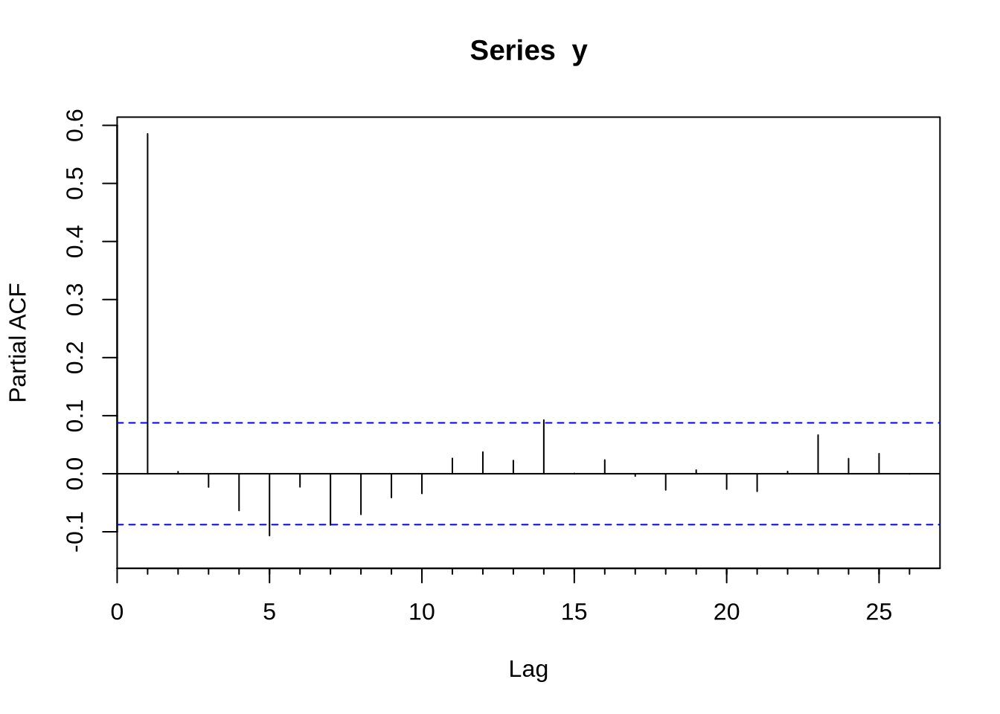
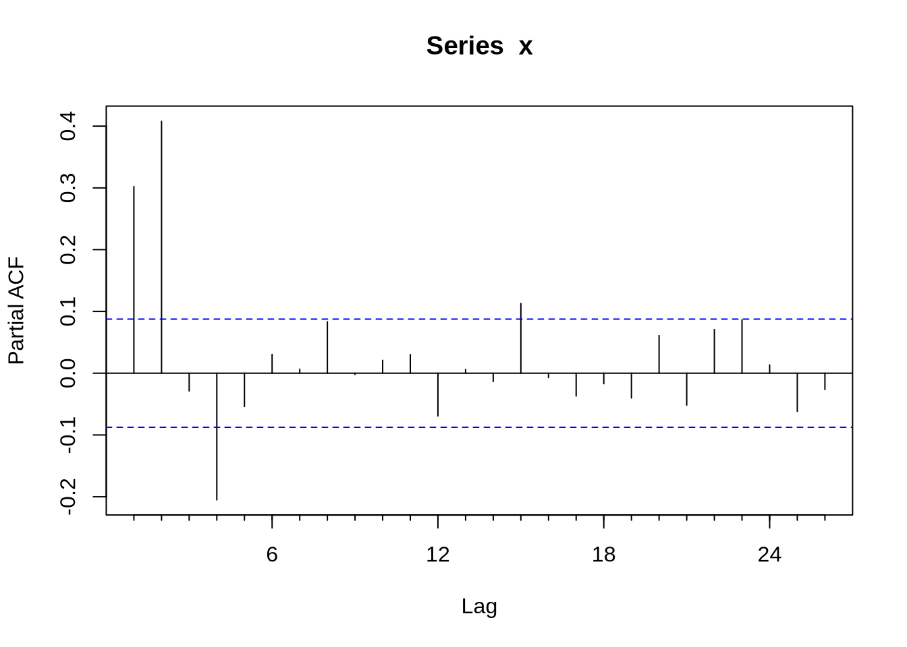
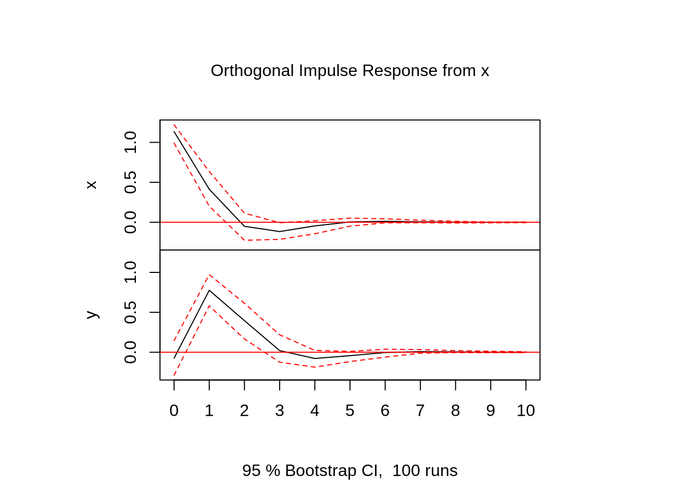
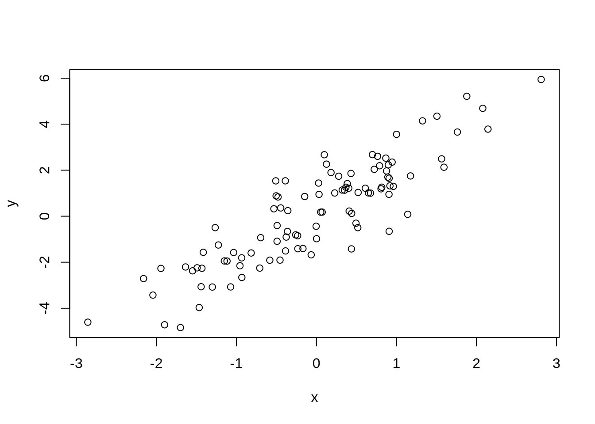

R: Uma Introdução para economistas
Última Atualização: 01/05/2020
#Introdução
Existem muitos softwares de estatística, mas o R é um dos mais populares. O R é um software gratuito, o que justifica a sua escolha. Mas além disso, a comunidade é muito ativa, desenvolvendo muitos pacotes - inclusive para econometria. O R não é tão amigável quanto o gretl: não existem menus para escolher como estimar. Entretanto, ele é muito mais flexível. Assim, o R tem ganho cada vez mais espaço entre aqueles que fazem econometria.
Este manual foi criado para ajudar a introduzir economistas ao R. Com isso, ele é mais voltado para exemplos de tratamento de dados e ferramentas estatísticas usadas pelos economistas. Existem outros excelentes livros que ensinam a usar o R, e alguns aplicados à econometria. Eles estão listados nas referências deste manual. Mas nenhum deles é em português, e muitos são muito detalhistas e longos. Este manual tenta servir como algo menos extenso que os livros. Portanto, uma consulta aos livros pode ser muito útil.
Esta é a segunda versão do manual, que foi extensivamente reescrito em meados de 2017 e início de 2018. Não é necessário nenhuma experiência anterior com programação, mas é necessário saber (alguma) econometria. O autor agradece as muitas pessoas na PUC-Rio que ajudaram com o R, bem como os seis meses trabalhando no Dlab. As duas versões anteriores foram escritas, originalmente, em LaTeX, o gold standard da edição de texto acadêmica.Essa versão foi escrita usando o bookdown, um pacote do R para produzir livros para a internet.
Algumas palavras sobre a filosofia por trás desse manual são necessárias: a ideia é tirar o leitor do chão e colocar ele pronto para fazer as coisas básicas de econometria rapidamente. Isso envolve notórias omissões. O autor muitas vezes sugere consultar o help, o que deve ser visto não como preguiça, mas sim como a única maneira de fazer as coisas: existem mais de 12 mil pacotes disponíveis para o R, e nenhum ser humano jamais conseguirá explorar e entender todos. O autor usou, diretamente, uma dúzia pacotes, se tanto. E invariavelmente é necessário consultar o help para saber qual o nome do argumento que faz alguma coisa específica. Assim, a ideia aqui é entender as ideias gerais do R, os comandos básicos e o mínimo do vocabulário para saber consultar/ler o help.
Definitivamente esse manual deve ser lido com o R aberto e tentando entender cada um dos comandos que são ditos aqui. Uma leitura comparativa entre o help e o que eu coloco no manual sobre cada comando é provavelmente a melhor maneira de proceder. Tentar replicar tudo que eu faço é uma maneira garantida de aprender. As seções Hands on propõe exercícios específicos para serem feitos no R. O capítulo projetinhos tem o mesmo objetivo, mas com exercícios que são mais extensos.
O manual é dividido em três partes: a primeira trata de como fazer econometria no R: é o coração do manual e é de principal interesse dos economistas; a segunda parte trata de como programar no R, o que é útil em algumas atividades um pouco mais avançadas. A terceira parte será dedicada a algumas coisas de matemática no R. Seções marcadas com um * são mais indigestas para a primeira leitura.
#Primeiros Passos
##Instalação
###Instalando o R e o RStudio
Instalar o R é trivial: basta ir no http://cran.r-project.org/ e baixar a versão para o seu computador. Exceto se você usar alguma distribuição de Linux (Ubuntu, por exemplo): ai é mais difícil, mas o próprio CRAN dá instruções de como fazer. Depois, recomenda-se baixar o R Studio, disponível em https://www.rstudio.org/. O R Studio é uma IDE (Integrated Development Enviroment), que facilita muito a vida na hora de programar - especialmente dando sugestões de comandos e mostrando quais variáveis estão salvas no ambiente do R. Assim, sugiro instalar o R Studio, que é bem tranquilo. Para usar o R Studio, você precisa ter o R.
###Uma alternativa
Se o seu computador tem um processador multi-core, pode ser interessante instalar o Microsoft R, disponível em http://mran.microsoft.com/. Ele é idêntico ao R, mas vem com uma biblioteca que tira vantagem dos vários núcleos do processador, o que o R padrão não faz. A principal desvantagem é que ele é atualizado com menos frequência, e a biblioteca que usa mais de um núcleo não está disponível para o Mac. Ele funciona com o R Studio.
###Interface
A interface do R Studio mostra 4 espaços diferentes: no canto esquerdo superior, existe uma tela chamada source (se ela não estiver lá, tente usar ctrl + shift + n para abrir); a direita dela, o ambiente; no canto inferior esquerdo, está o console; e no canto inferior direito está uma tela multiuso, que deve vir com as abas plot, files. Cada uma dessas será explicada, por alto, nesta seção
A que mais nos interessa, em um primeiro momento, é o console. Nele, você pode passar comandos direto para o R. Digitando 2 + 2 nele e clicando em enter, o resultado deve aparecer na tela. Em geral, é nele que você vai trabalhar. Entretanto, escrever código muito longos no console é muito ruim. O console é desorganizado, não permite salvar o código passado para ele para ser usado mais tarde e não permite com que você corrija erros com facilidade. O source serve justamente para escrever um código longo - uma função ou uma simulação, por exemplo - que pode ser executado no console. Para isso, basta selecionar o conteúdo e dar ctrl + enter ou chegar no fim da linha e usar ctrl + enter.
A tela do canto direito inferior é uma “geleia geral”: a aba plots é onde os gráficos que faremos vão aparecer; a aba files permite você ver arquivos em diferentes pastas do computador. Estas são as abas mais importantes e que mais serão usadas. Em cima desta tela, há a tela environment, que mostra as variáveis que foram criadas e estão disponíveis para o R usar
##Erros, Warnings e letras vermelhas
Tão importante quanto saber fazer a coisa certa é saber quando temos um problema. Existem dois tipos de erro:
- Error: esses são de fato erros, e o R não consegue proceder. O que você escreveu tem algum problema grave e não pode ser executado.
- Warning: o R conseguiu fazer o que você pediu, mas alguma coisa esquisita aconteceu, e o R está te avisando.
Veja que em ambos os casos a mensagem vai aparecer em vermelho no console. Error e warnings vem das mais diferentes formas (afinal, é possível errar de diferentes formas). Alguns são claros, como tentar somar um número e uma letra:
## Error in 2 + "a": argumento não-numérico para operador binário(Apesar de operador binário não ser exatamente óbvio)
Outros são mais misteriosos, e quando encontramos um erro impossível de entender, coloque o output do console no google. Typos geram muitos erros (ex.: esquecer o parêntese, errar o nome de um objeto). Em um código longo, descobrir o erro pode ser difícil. Existem ferramentas para isso, e o próprio source do RStudio indica linhas com algum erro com um x vermelho do lado do número da linha. Em geral, em um código muito longo, não é uma estratégia ruim escrever uma parte do código, testar e debugar (retirar os erros) ela. Funções ajudam a fazer isso: trataremos delas mais a frente.
É importante notar que, apesar de uma linha de código que devolva um warning não está errada, ela pode muito bem fazer uma coisa que você não quer. Assim, um warning surpresa deve ser visto com bastante cuidado e normalmente você não deve ignorar um warning.
Veja que essas mensagens não são as únicas que aparecem em vermelho no R: quando o R instala ou carrega um pacote ele exibe algumas coisas em vermelho1. Não se preocupe: isso não quer dizer que o R encontrou algum erro ou warning ao instalar o pacote, é apenas o comportamento padrão do R.
###Pacotes
O grande atrativo do R são os pacotes. Para instalar um pacote, basta digitar no console:
install.packages("nome-do-pacote")É necessário colocar as aspas para o pacote instalar. Uma vez instalado, o pacote não é carregado automaticamente. Para carregar o pacote, basta digitar no console:
library(nome-do-pacote)Agora as aspas não são necessárias.
Instalar pacote por pacote pode ser uma tarefa chata. Além do mais, isto exige que você saiba quais são os pacotes que fazem cada coisa. Felizmente, o CRAN mantém coleções de pacotes de determinados temas, chamados de Task Views. Existe um de econometria, e para instalar ele é necessário instalar o pacote ctv , e depois o task view de econometria:
install.packages("ctv")
library(ctv)
install.views("Econometrics")Como são muitos pacotes, esta operação pode tomar algum tempo. Em geral, muitos dos pacotes nos task view não são tão úteis, então pode ser interessante ir no cran, e visitar os task views para selecionar quais pacotes de lá fazem o que você precisa fazer. Existem vários pacotes, para diferentes áreas. Para os economistas, além do pacote de econometria, os pacotes de Time Series, Bayesian, Finance, Machine Learning podem ser de interesse. De fato, com a expansão das áreas de pesquisas, muitos outros task views podem ser de interesse! Recomenda-se visitar o cran para ter uma visão do que está disponível.
| Hands on! |
|---|
Vamos instalar um primeiro pacote que adiciona vários comandos importantes para econometria e alguns datasets de livros de econometria (como o Stock Watson). O nome do pacote é AER. Ele vai instalar vários outros pacotes que ele necessita para funcionar, então a instalação pode demorar um pouco. Ele será usado de agora por diante, então tenham certeza que ele está carregado, ou seja, que vocês sempre estão usando o library(AER) quando abrem o R.
|
##Ajuda
Em 90% do tempo você vai precisar de olhar o help: seja para lembrar que opções estão disponíveis em um comando, ou lembrar exatamente o que o comando faz, ou descobrir qual o comando para fazer alguma coisa específica que você só tem uma palavra chave: ``Como gera números saídos de uma distribuição normal mesmo?’’2
Se você sabe o comando e quer ler o help deste comando, basta fazer ?comando. Por exemplo, se você quiser saber o que o comando rnorm faz e quais as opções ele oferece, basta digitar no console ?rnorm. Se você não sabe o nome do comando, mas quer saber todos os comandos que estão relacionados a uma determinada palavra chave, use ??palavra. Por exemplo, se você quiser saber todos os comandos que envolvem a distribuição normal, basta usar ??normal. Observe que, se você tiver muitos pacotes, isto pode demorar um pouco, já que exige que o R procure cada pacote que se referencie àquela palavra.
Você também pode estar interessado em todos os comandos de um pacote. Neste caso, a melhor solução é é usar help(package=``nome-do-pacote'').
##Comentando
Em geral, quando se escreve um código, é importante explicar o que algumas partes do código fazem. Isso não é exclusivo para o caso em que o código vai ser distribuído: pelo contrário, o você do futuro vai agradecer muito o você do passado se você comentar o seu código. Para comentar o código no R, usa-se o #. Tudo depois do # vira um comentário é ignorado pelo R. Assim, suponha que queremos explicar o que o parâmetro a abaixo é: suponha que ele vem de um outro estudo, de Cleese et. al. (1975). Então:
a <- 1 #Retirado de Cleese et. al. (1975)A regra geral para comentários é: eles não devem ser óbvios (ex.: 1 + 1 # somando dois números) mas devem ajudar o leitor - que eventualmente será você mesmo - a entender o que está sendo feito - especialmente em momentos mais obscuros.
##Objetos*
Como muitas linguagens de programação, existem vários tipos de objetos no R. Objetos são maneiras diferentes de guardar os dados. Os mais usados e mais comuns são:
- Vetor
- Matriz
- Dataframe
- Lista
Em geral, para dar um nome a um objeto, usamos uma setinha, <-, que é o sinal de menor e o menos. Podemos usar o igual também, mas é preferível a seta. Então, se fizermos a <- 1 e digitarmos a, o R vai mostrar 1. Veja que por padrão o R não mostra o valor de objetos que você acabou de criar, e vai mostrar apenas se você pedir.
## [1] 1Vetores são só coleções unidimensionais de “coisas”. Para criar um vetor, basta usar c() e separar os elementos por vírgula. Suponha que queremos listar os 4 primeiros números primos, então poderíamos fazer:
Assim, ao digitar no console primos:
## [1] 2 3 5 7Podemos fazer operações com vetores, como somar, subtrair, multiplicar e dividir. Observe que multiplicar um vetor não é multiplicar uma matriz: o R vai multiplicar elemento a elemento. Então c(1,2,3)*c(1,2,3) gera como resultado:
## [1] 1 4 9Para multiplicar dois vetores como multiplicariamos usualmente, usamos %*%:
## [,1]
## [1,] 14Podemos agrupar vetores em matrizes, usando os comandos cbind e rbind, que transforma cada vetor em uma coluna ou em uma linha, respectivamente. Assim, se fizermos cbind(c(1,2),c(3,4)), teríamos:
## [,1] [,2]
## [1,] 1 3
## [2,] 2 4Se usarmos o rbind(c(1,2),c(3,4)), teríamos:
## [,1] [,2]
## [1,] 1 2
## [2,] 3 4Existe outra maneira de fazer matrizes, com o comando matrix. Veja que as operações *e %*% funcionam assim como elas funcionam com vetores: *multiplica elemento a elemento a matriz e %*%multiplica a matriz da maneira usual:
## [,1] [,2]
## [1,] 1 3
## [2,] 2 4## [,1] [,2]
## [1,] 4 4
## [2,] 6 6Observe que matrizes forçam todos os elementos a serem do mesmo tipo. Suponha que você quer fazer uma matriz com nomes e notas de alunos, e quer tirar a média das notas. O R vai acusar um erro, porque as notas não serão do tipo numérico, e sim do tipo character, que é o tipo do nome dos alunos. Para contornar este problema e poder agregar vetores com diferentes tipos - como é o caso do exemplo de notas de alunos e notas é que existe o objeto do tipo dataframe. O comando data.frame funciona como um cbind, que permite diferente juntar vetores de diferentes tipos em uma “matriz”.
Observe que, para formar matrizes e dataframes, os vetores tem que ter o mesmo tamanho, o que nem sempre é possível ou desejável. Neste contexto, existem as listas, que são um anything goes. Você pode ter uma lista de vetores, uma lista de variáveis, uma lista de listas etc. Além disto, você pode dar nomes as coisas dentro dela e chamar pelo nome. Por exemplo, se fizermos:
E depois digitarmos um.teste$Dia, ele deve exibir qual a data atual. Digite um.teste$Ola e ele deve exibir um Olá na sua tela:
## [1] "Fri May 1 10:58:58 2020"## [1] "Olá"Observem que eu usei um “Olá”, entre aspas na lista. Aspas são bastante importante. Por exemplo, faça: c("Bom","Dia"). O R vai mostrar na tela as duas palavras. Agora, suponha que você esquecesse as aspas no Dia. Agora, o R dará um erro: ele afirma que o objeto Dia não foi encontrado.
Assim, se quisermos digitar palavras, frases, letras, devemos colocar eles entre aspas. Caso contrário, o R vai buscar o objeto com aquele nome. De maneira bastante grosseira, expressões desse tipo são chamadas de string.
Familiarizados com como instalar, pedir ajuda, e os principais objetos do R, podemos proceder para a primeira etapa de qualquer análise de dados: como inserir os dados no R.
#Inserindo e Manipulando Dados no R: O básico.
Só podemos fazer análise de dados se tivermos… dados. Este capítulo ensina a colocar os dados no R e a manipular eles como para criar variáveis necessárias ou limpar os dados antes de iniciarmos a análise.
Esse capítulo não tenta ser enciclopédico nem detalhista: pelo contrário, ele omite muitas coisas. A omissão mais grave é, sem dúvida alguma, os pacotes do Tidyverse. A omissão se deve a ignorância do autor em usar estes pacotes.
##Arquivos excel/csv
O R não lê diretamente arquivos excel (.xls ou .xlsx), apesar de alguns pacotes permitirem o R ler estes arquivos. Mas esta não é a melhor opção: o ideal é salvar a planilha com os dados em outro formato, como .csv. Isto não é difícil: basta, no excel, ir em salvar como, e embaixo na opção de nome do arquivo há a opção de escolher o formato. O que queremos é csv (separado por vírgula)
Para carregar o arquivo no R, precisamos saber algumas poucas coisas:
- O seu excel usa ponto ou vírgula como separador decimal? *Aonde está o arquivo
O item 1 importa porque, se o separador decimal for vírgula, usamos o comando read.csv2. Caso contrário, usamos read.csv. O comando é bem simples: basta passar o caminho (aquele C:/Usuário/…). Por exemplo, suponha que eu tenho um csv chamado dados, e quero importar ele para o R. Ele fica no C:/Usuário/Autor/Manual. Então, eu faria:
read.csv2("C:/Usuário/Autor/Manual/dados.csv")Observe que o caminho para o arquivo está entre aspas e que você precisa colocar a extensão do arquivo no fim - o .csv. Mais uma observação: em geral, se você copiar e colar o caminho como o Windows dá o nome de arquivo com ao invés de /. O R só lê usando /, então você tem que alterar isto.
Neste caso, o R só vai exibir os dados, e não vai salvar eles dentro do R. Você não vai poder fazer nada com os dados. Para podermos usar eles mais tarde, precisamos salvar ele no ambiente do R. Para isto, basta criar um objeto com os dados, como já fizemos no capítulo anterior. Por exemplo, podemos ser extremamente criativos e chamar o objeto de dados. Nesse caso:
dados <- read.csv2("C:/Usuário/Autor/Manual/dados.csv")Se você não está familiarizado com usar o caminho dos arquivos, isto pode parecer excessivamente complicado. Felizmente, o R permite com que você escolha o caminho do arquivo de maneira mais usual, usando um menu e o mouse. Para isto, precisamos alterar o comando acima ligeiramente:
dados <- read.csv2(file.choose())Isto vai abrir o menu e permitir que você escolha o arquivo como um menu do word. Entretanto, apesar de ser mais fácil, essa solução pode ser extremamente inconveniente: toda vez que você for rodar o programa você vai ter que escolher. Apesar de trabalhar com o caminho ser um pouco mais chato, isto poupa muito tempo.
##Lendo arquivos do stata e outros pacotes estatísticos
Muitos arquivos com dados ainda são distribuídos em versão de programas estatísticos, como o stata. É fácil ler estes arquivos usando o pacote foreign. Normalmente este pacote já vem instalado, mas caso você não tenha, você pode instalar como qualquer outro pacote. Ele permite ler dados do SAS, SPSS, entre outros. A ideia é a mesma da seção anterior, mas com comandos diferentes para cada tipo de arquivo: o ideal é consultar o help do pacote.
Por exemplo, para ler um arquivo do stata, o comando no pacote foreign é read.dta. Suponha que, ao invés de ser um arquivo .csv, meus dados do exemplo anterior estivessem salvos em formato do stata. Bastaria fazer:
dados <- read.dta("C:/Usuário/Autor/Manual/dados.dta")Porém, o read.dta só lê arquivos criados pelo stata até a versão 12. Para versões posteriores do stata, existe um pacote chamado readstata13. Se, ao usar o read.dta você receber uma mensagem de erro, vale a pena checar o readstata13.
##Lendo arquivos muito grandes
Algumas bases de dados podem ser muito grandes, e o R pode sofrer para abrir - mesmo em computadores com muita memória e muito processamento. Para driblar o problema, o pacote data.table ajuda a carregar arquivos grandes para o R. O pacote trás várias opções para trabalhar com os dados carregados, que não serão tratadas aqui.
Outra opção é o pacote readr, que funciona de forma parecida com o comando padrão do R. Para ler um csv que usa vírgulas para separar decimais, o comando é read\_csv2 - basicamente idêntico ao comando padrão do R, mas com uma linha no lugar do ponto. Ao carregar o arquivo, tudo funciona como o usual. Uma pequena diferença é que o nome das variáveis é preservado: assim, uma variável chamada “Nome da variável” continuará se chamando “Nome da variável”, ao invés do padrão do read.csv2 de transformar em “Nome.da.variável”. Apesar de isso parecer bom a primeira vista, dificulta acessar as variáveis mais tarde, já que o R não entende nomes com espaço para objetos.
##O pacote BETS (e muitos outros)
Para dados do Brasil, especialmente dados macroeconômicos, o pacote BETS é uma excelente alternativa para puxar os dados via BCB/IBGE. O BETS permite com que, direto do R, você busque e salve séries disponíveis em diversas bases de dados - entre elas o BCB e o IBGE. O cerne do BETS são os comandos BETSsearch() e BETSget(). O BETSsearch() permite buscarmos por uma palavra chave e retorna informações da série - frequência, fonte, início e fim e um código. O BETSget() permite com que você recupere a série a partir do código. Para recuperarmos o IPCA, fariamos:
##
## BETS-package: Found 51 out of 18706 time series.Veja que colocamos o View(busca) comentado apenas para este post: ao rodar essa linha, uma aba no RStudio abrirá e mostrará todas as séries que se encaixam neste critério.
Veja que este não é o único pacote disponível para baixar dados! Existem muitos outros, e a melhor maneira é fuçar o CRAN. (Mas em breve devo adicionar mais um aqui, o Quandl)
##Trabalhando com os dados
Uma vez carregado os dados, pode ser necessário manipular os dados de diversas maneiras. Esta seção tratará de algumas das maneiras mais comuns.
###Selecionando linhas/colunas/elementos
Selecionar uma linha ou uma coluna específica de uma base de dados é essencial. Se quisermos rodar uma regressão e cada coluna da tabela é uma variável, então temos que ser capazes de informar ao R quais colunas serão usadas como variável explicada e quais como variável explicativa. O R usa a notação de matrizes com colchetes, então para selecionar a 4ª linha da base de dados chamada dados, basta fazer dados[4,]. Veja que colocamos a vírgula e depois deixamos em branco, informando ao R que queremos todas as colunas. Para obter todas as linhas da quarta coluna, fazemos dados[,4].
E se quisermos apenas algumas linhas ou algumas colunas? Podemos passar um vetor dizendo quais são essas linhas e/ou colunas. Por exemplo, se quisermos as linhas 1 a 4, podemos passar um dados[1:4,]. E se quisermos as linhas 1 e 4, podemos fazer: dados[c(1,4),]
Outra maneira, bastante útil, de selecionar variáveis é pelo nome delas. Suponha que os dados vem com nomes id, renda, escolaridade. Para selecionar a variável renda, basta fazer dados$renda. Veja que isso exige saber como (e se) o R importou os nomes. Para isso, a função names permite saber quais os nomes das variáveis. Logo names(dados) vai retornar os nomes das variáveis. Em geral, os espaços são substituídos por pontos, logo uma variável anos de estudo se tornará anos.de.estudo. Veja que também podemos acessar as variáveis em um data.frame usando nome do data.frame$nome da variável. Assim, se temos um data.frame com nome dados e queremos acessar a variável renda, bastaria fazer dados$renda.
Veja que podemos querer selecionar apenas um elemento. No caso de vetor, é a única coisa que faz sentido: o vetor só tem uma dimensão (uma linha ou uma coluna), então só podemos pegar um elemento dele. Suponha que temos o vetor \(\mathbf{v}\) e queremos o décimo elemento: basta fazer v[10]. Veja que não usamos vírgulas, que são usadas apenas para separar as dimensões. Se quisermos um elemento de uma matriz, basta passar a linha e a coluna dele, respectivamente. Por exemplo, o elemento da segunda linha e quinta coluna do dataframe dados é obtido usando dados[2,5].
Mas o R permite você selecionar o elemento de uma matriz como se fosse um vetor! Suponha uma matriz - chamaremos ela de \(\mathbf{M}\) - com 5 linha e 5 colunas. O último elemento da matriz pode ser obtido com M[5,5] ou, equivalentemente, M[25]. Veja que o 25 não é a toa, no total a matriz tem 25 elementos: logo, o último tem que ser o membro 25.
As vezes, queremos transformar uma variável contínua em uma dummy. Pode ser o caso que queremos isolar apenas aqueles que recebem menos de um salário mínimo, e queremos que quem tiver menos de um salário mínimo tenha valor 1 e, caso contrário, 0. Suponha que o salário mínimo seja 678, e que a variável de salários se chame w. Então, bastaria fazer:
sal.min <- w < 678Observe que o R vai gerar um vetor de Verdadeiros e Falso. É possível converter para numérico, mas não há nenhuma necessidade, uma vez que o R é capaz de interpretar o verdadeiro ou falso como uma dummy na regressão.
O que estamos fazendo é apenas uma operação de compara cada número do vetor ao número 678. Testamos se ele é menor (<), mas poderíamos ver que números são maiores (>), iguais (==)3, menor ou igual (<=) ou maior ou igual (>=). Estes operadores não são apenas úteis para criar dummies, mas também pode servir para escrever funções, que será tratado mais a frente.
Pode ocorrer de a variável vir como um vetor de palavras ou siglas. Suponha que estamos trabalhando com um painel que tem variação temporal e por estado, e o vetor de estados vem com as siglas dos estados (RJ,SP,ES,MG,DF…). Se quisermos usar efeitos fixos de uma maneira extremamente ingênua, poderíamos criar dummies para cada estado e estimar o efeito fixo de cada estado. Esta não é uma maneira inteligente de fazer, já que existem pacotes para fazer estimação usando efeitos fixos com bem menos trabalho, que serão tratados no próximo capítulo. Mas, no momento, vamos ignorar esta opção e tentar criar uma dummy para cada estado.
Uma possível solução era criar um vetor para cada estado (Ou talvez uma matriz com n linha e o número de colunas sendo igual o número de estados), ler cada posição do vetor das siglas usando um loop e colocar um 1 na coluna correspondente, criando um vetor índice para o R buscar qual coluna é relacionada com cada estado… Se a explicação anterior bagunçou o seu cérebro, não se preocupe: ela é complicada, e o R não exige nada tão complicado4
Uma solução muito mais simples é usar o comando factors, que gera automaticamente dummies para cada categoria. Assim, RJ vira uma dummy, SP outra etc. Isso é automático, e podemos jogar direto numa regressão. Assim, suponha que temos uma base de dados chama dados e a coluna 2 é a coluna com os estados. Nesse caso: estados <- factor(dados[,2]). Poderíamos usar estados diretamente na regressão, que será tratada no capítulo seguinte.
Uma nota: a partir da versão 4.0 do R, o comportamento ao importar um arquivo tipo csv mudou. Antes, colunas de caracteres eram automaticamente convertidas em fatores. Agora, as colunas de caracteres permanemce sendo caracteres. Você pode mudar isso coloca no read.csv stringAsFctors = T. Você pode mudar na mão também. Isso é extremamente inconveniente se o seu plano é fazer uma regressão linear, mas extremamente conveniente pra outra parte dos usuários.
#Regressão Básica
O coração de econometria é o modelo de regressão linear, estimado por Mínimos Quadrados Ordinários. Mas muitos outros métodos são úteis, como modelos logit, probit, variáveis instrumentais e modelos para painel. Este capítulo trata - finalmente! - de modelos de regressão no R.
##Mínimos quadrados ordinários
Suponha que carregamos uma base de dados (chamada dados), e que esta base tem as variáveis \(y, x.1,x.2,x.13\) e que nosso objetivo é estimar um modelo da forma: \(y = \beta_0 + \beta_1 x_1 + \beta_2 x_2 + \beta_3 x_3 + \epsilon\). O comando que faz estimativa por mínimos quadrados é o lm e para estimarmos a regressão proposta basta fazer:
reg <- lm(y ~ x.1 + x.2 + x.3 + x.4, data = dados)Usamos o ~ para separar a variável explicada (à esquerda do til) das explicativas (à direita do til), e para separar as explicativas usamos o +. A opção data diz ao R onde buscar as variáveis.
Agora, o objeto reg5 tem o modelo estimado. Para obter uma tabela usual de regressão, com valor do coeficiente, erro padrão, estatística t e p-valor, \(R^2\) ajustado, e o teste F para os coeficientes basta usar summary(reg). No contexto de regressão linear, podemos querer fazer uma série de coisas, que são explicadas a seguir.
Atenção: Séries Temporais e o lm
Objetos de série temporal são armazenados pelo R de uma maneira especial - uma vez que você transforma ele em um objeto de série temporal. Entretanto, você não deve passar um objeto de série temporal para o lm(), já que o lm vai ignorar o formato de série temporal. Assim, estimar um modelo AR(1) usando lm(y ~ lag(y)) vai gerar uma regressão com coeficiente 1 para lag(y) e \(R^2 = 1\). De fato, a regressão feita foi y em y - o que não é uma regressão muito emocionante.
###Testes de hipótese
Suponha que queremos testar a significância conjunta de x.2 e x.3. Precisamos fazer um teste F. Uma maneira é estimar um novo modelo, que chamaremos de reg.2, só com o x.1: reg.2 <- lm(y ~ x.1)
Agora, para testar a significância conjunta de x.2 e x.3 basta fazer anova(reg,reg.2) e o R reportará os valores do teste (incluindo o p valor)
Testes mais gerais também estão disponíveis, pelo pacote car6. O comando é linearHypotesis com o primeiro argumento sendo o objeto com o modelo. O segundo comando é a hipótese que estamos testando, entre aspas, e entramos ele de maneira extremamente intuitiva: suponha que no exemplo acima queremos testar se o coeficiente de x.2 é igual ao coeficiente de x.4. Nesse caso, o comando se resumiria a linearHypotesis(reg,"x.2 = x.4"). Várias opções podem ser usadas, como usar estimadores de erro padrão robustos a heterocedasticidade. Recomendamos que o leitor olhe o help do comando no R.
###Erros padrões robustos
Na presença de heterocedasticidade ou autocorrelação, os erros padrões usuais não são confiáveis. Infelizmente, o comando summary não exibe erros robustos por default e nem permite alterar os erros padrões exibidos. Felizmente, o pacote lmtest traz uma opção para o sumário padrão do R. A primeira coisa a fazer é carregar o pacote sandwich (library(sandwich)). O comando é coeftest e a sintaxe é curiosa. No caso do nosso exemplo, se quisermos obter erros robustos a heterocedasticidade:
coeftest(reg, vcov. = vcovHC(reg))Uma explicação: O comando coeftest chama o comando vcovHC do pacote sandwich. Por sua vez, o comando vcovHC precisa saber qual o modelo que vai ter erros robustos. Por isso uma função que recebe uma função. Veja que se quisermos erros robustos a heterocedasticidade e autocorrelação, o comando vira vcovHAC.
###Logs
Muitas vezes queremos fazer as regressões não com as variáveis em nível, mas com as variáveis em log. Nesse caso, suponha que queremos a variável dependente - y - em log. Para isso, basta fazer log.y <- log(y) e a variável log.y vai ser a versão em log da variável y. Você pode reescrever a regressão como lm(log.y ~ x.1 + x.2 + x.3).
Agora, pode ocorrer de em alguns casos o vetor y ter algum elemento zero. Mas \(\log(0) = -\infty\). O R tem um elemento Inf (e - Inf) para esses casos, mas o comando lm vai acusar um erro ao receber um vetor com algum elemento Inf. A solução é trocar esse valor para alguma coisa, como um NA, que o R vai ignorar7. Para fazer isso, suponha que o vetor com os Inf seja o log.y do paragrafo anterior. Precisamos explicar para o R quais casos nós queremos substituir, e isso é incrivelmente fácil: assim como podemos usar log.y[1] para escolher o primeiro elemento do vetor log.y, podemos colocar entre colchetes uma condição, por exemplo os elementos do vetor log.y que são iguais a infinito. Já tratamos disso: log.y == -Inf faz esse trabalho. Assim, se quisermos substituir os elementos de log.y que são iguais a -Inf por NA, basta usar o seguinte trecho de código:
log.y[log.y == -Inf] <- NA##Probits e Logits
Probits e logits também são úteis quando nossa variável dependente é uma dummy. Sempre podemos usar um modelo de probabilidade linear, e nesse caso o comando a ser utilizado é o lm. Mas em casos que queremos usar um probit ou logit, precisamos recorrer ao glm, que tem sintaxe muito parecida com o lm. Mas além de especificar as variáveis dependentes e independentes, também precisamos especificar o tipo de regressão, basicamente a distribuição da variável dependente. No caso de probits e logits, a variável dependente tem distribuição binomial. Depois, temos que especificar se a função de probabilidade da variável dependente é probit ou logit. Os comandos para estimar probits e logits são ilustrados abaixo:
mod.1 <- glm(y ~x.1 + x.2 + x.3, family = binomial(link = 'probit'))
mod.2 <- glm(y ~x.1 + x.2 + x.3, family = binomial(link = 'logit'))E como de praxe, podemos usar o comando summary para obter os coeficientes, desvios padrões e estatísticas t.
##Variável instrumental
Métodos de variável instrumental são muito úteis e populares, especialmente em casos de endogenidade. Existem várias implementações, mas para o mínimos quadrados de dois estágios usual, o pacote AER oferece um comando ivreg. A sintaxe é similar ao lm, mas com uma alteração na formula para inserir os instrumentos, que são separados dos regressores por |.
Por exemplo, suponha que temos a variável dependente y, as variáveis endogenas x.1 e x.2, a variável exogena x.3, e os instrumentos z.1 e z.2. Nesse caso, o ivreg seria usado:
modelo <- ivreg(y ~x.1 + x.2 + x.3|z.1+z.2+x.3)E podemos usar o summary para ver o valor dos coeficientes, erros padrão e estatísticas t. Observe que o pacote não mostra o valor do teste F para o primeiro estágio nem de teste de sobre identificação.
##Dados em painel
Em muitas aplicações usamos dados em painel - i.e., com dimensão temporal e cross section. Em geral, esse tipo de aplicação acaba envolvendo o uso de efeitos fixos. Existem duas maneiras de fazer: usando o pacote plm ou “na mão”, usando o lm. Não há nenhuma vantagem de usar o lm “na mão”, em geral, exceto em casos que temos mais de duas dimensões ou por algum motivo o plm não funciona. Exploraremos primeiro o uso do plm, que deve satisfazer a maioria dos usuários. A solução na mão vem depois e pode ser ignorada sem perda de continuidade.
Supondo que o pacote já foi instalado e carregado, precisamos (i) explicar para o pacote quais colunas são as colunas com efeitos fixos de tempo e unidade e (ii) rodar a regressão propriamente dita. Suponha, como de praxe, que temos um dataframe carregado no R com nome “dados”. Suponha que as colunas com as datas e um índice para unidades se chamam datas e unidades, respectivamente. Veja que essas colunas podem estar em formato de carácter, e que isso não deve nos preocupar no momento: poderia ser o caso de a unidade ser estados do país e o código da unidade ser o código do estado (DF,RJ,SP,…). O pacote plm disponibiliza o comando plm.data, que converte um data frame de forma que quando rodarmos a regressão, o R saiba quem são os efeitos fixos. Assim, vamos criar um dataframe chamado dd:
dd <- plm.data(dados,c('unidades','datas'))O primeiro argumento da função é o data.frame a ser convertido, que contém as colunas para as quais criaremos efeitos fixos. O segundo argumento da função são as colunas com os efeitos fixos. Veja que a ordem é unidade e depois a variável temporal. Agora, a estimação do modelo pode ser feita usando o comando plm, que tem sintaxe muito similar ao lm: passamos uma formula com a variável dependente e as independentes, informamos a base de dados - que nesse caso é o objeto dd, não o objeto dados. Mas temos algumas novas opções: o método de estimação (em geral estamos interessados em within, o padrão), mas mais relevante é que efeitos fixos queremos colocar: só para indivíduo, só para tempo ou ambos. Abaixo, mostramos a sintaxe para cada um dos casos, respectivamente:
mod.1 <- plm(y ~x.1 + x.2,data = dd, effect = 'individual')
mod.2 <- plm(y ~x.1 + x.2,data = dd, effect = 'time')
mod.3 <- plm(y ~x.1 + x.2,data = dd, effect = 'twoways')Como de praxe, podemos usar o comando summary para obter um sumário da regressão.
###Painel usando lm*
Suponha que não conseguimos usar o plm por alguma razão. Por exemplo, podemos querer três efeitos fixos: se tivermos microdados de escola, podemos querer ter efeito fixo de aluno, escola e tempo. Podemos implementar isso no braço usando o lm. Lembre-se que, no fundo, efeitos fixos são mera dummies, então se fizermos um modelo linear com dummies, devemos obter resultados parecidos.
Para ficarmos em terreno conhecido, suponha que só temos dois efeitos fixos que nos interessam: unidade e tempo. Cada um desses vem codificado em duas colunas: uma com a data e outra com algum código para a unidade. Lembrem-se da discussão no capítulo anterior que o lm é capaz de usar isso e entender como dummies, sem a necessidade de criar várias variáveis com 0 e 1. Logo, se queremos explicar y usando x como variável explicativa e efeitos fixos de unidade e tempo, a seguinte regressão deve bastar:
modelo <- lm(y ~x +tempo + unidade, data = dados)E y,x,tempo e unidade estão no dataframe chamado dados, como de praxe. Algumas diferenças devem ser notadas para o comando plm:
- O sumário vai ser mais confuso no caso do
lm: oplmesconde os efeitos fixos, o que não ocorre no caso dolm
Mas mais importante:
- Devido a maneira como o
plmestima o modelo (por within, em geral), oplmusa menos graus de liberdade e pode fazer estimações mais precisas. Isso deve impactar mais nos desvios padrões que no valor dos coeficientes, especialmente quando o número de variáveis for muito grande.
| Hands on! |
|---|
É uma boa hora de checar se os resultados do plm e do lm são de fato similares. O pacote AER traz a base de dados do exemplo de dados em painel sobre cigarros tirado do livro do Stock e Watson. Para carregar, basta digitar data("CigarettesSW"). Os efeitos fixos são para estado e ano, e vem em colunas com nomes state e year, respectivamente. As variável packs nos traz o número de pacotes consumido naquele ano e estado, e income a renda do estado naquele ano. Uma regressão packs em income com efeitos fixos para estado e ano pode ser feita usando os dois métodos da seção anterior: o plm e o lm. Ambos devem dar, aproximadamente, o mesmo valor para o coeficiente do efeito da renda sobre pacotes \((-9.070e-08)\).
|
#Séries Temporais
Métodos de séries temporais são suficientemente extensos e únicos para terem seu próprio capítulo. Este capítulo trata dos principais métodos de séries temporais de interesse dos economistas: ARIMAs, VARs, testes de raiz unitária e cointegração. Séries temporais são únicas o suficiente a ponto de terem um classe própria - sem nenhuma surpresa, ela se chama time series.
##O básico
Suponha que você, usando os métodos do capítulo 2, inseriu uma série temporal no R. O R não sabe, a priori, que os dados são uma série temporal. Você precisa contar isso a ele, e o comando que faz isso é o ts(). O ts recebe a série, a data de ínicio e a frequência. A frequência é como você dividiu o ano: 4 se o dado for trimestral, 12 se for mensal…
Por exemplo, podemos gerar uma série de variáveis aleatórias da normal (um ruído branco) e transformar em série temporal mensal começando em janeiro de 2000:
Veja que o comando ts() é excessivamente engessado: os dados tem que ter uma frequência fixa, expressa como uma fração do ano. O pacote zoo extende bastante as capacidades do R em lidar com séries temporais, inclusive com séries irregulares.
Atenção: Séries Temporais e o lm
Você não deve passar um objeto de série temporal para o lm(), já que o lm vai ignorar o formato de série temporal. Assim, estimar um modelo AR(1) usando lm(y ~ lag(y)) vai gerar uma regressão com coeficiente 1 para lag(y) e \(R^2 = 1\). De fato, a regressão feita foi y em y - o que não é uma regressão muito emocionante.
##ARIMAs
Com uma série devidamente construída para ser um objeto ts - como nós fizemos acima- podemos tentar estimar algum modelo. O modelo base de séries temporais é o ARIMA. O R base já vem com muitas funções para lidar com isso, mas o pacote forecast extende bastante as capacidades do R em lidar com esse tipo de série. O primeiro passo para estimar um modelo Arima é obter a função de autocorrelação (FAC) e a função de autocorrelação parcial (FACP): elas são Acf e Pacf. Veja que existem versões na base do R que se chamam acf e pacf (notem que lá é com maiúscula e aqui com minúscula). A diferença fundamental entre os dois é que a Acf e a acf (e também a Pacf e a pacf) é que a primeira exclui a autocorrelação no momento 0 - que é trivialmente 1.
Uma vez conhecendo o formato da FAC e da FACP, podemos estimar o ARIMA. O comando para estimar um modelo ARIMA é Arima - e novamente, existe um arima com minúscula que é da base do R. O Arima basicamente recebe duas coisas, a série e a ordem do modelo(isso é, se o modelo é um ARMA(1,1), AR(1), MA(1) etc). Vamos gerar um exemplo de um AR(1) com dados simulados e obter a FAC e FACP e estimar o modelo Arma sugerido:
## Registered S3 method overwritten by 'quantmod':
## method from
## as.zoo.data.frame zoou <- rnorm(500)
y <- rep(0,500) #nossa futura série
y[1] <- u[1]
for(i in 2:500){
y[i] <- 0.6*y[i-1] + u[i] #um AR(1) com coeficiente 0.6
}
Acf(y)

## Series: serie
## ARIMA(1,0,0) with non-zero mean
##
## Coefficients:
## ar1 mean
## -0.0312 -0.0157
## s.e. 0.0316 0.0315
##
## sigma^2 estimated as 1.06: log likelihood=-1447.14
## AIC=2900.28 AICc=2900.31 BIC=2915
##
## Training set error measures:
## ME RMSE MAE MPE MAPE MASE
## Training set 1.500234e-05 1.028603 0.8091188 98.585 111.1065 0.7103052
## ACF1
## Training set -0.0002764195Veja que o objeto modelo trás os coeficientes estimados, o erro padrão e alguns diagnósticos úteis como critérios de informação.
Em algumas situações pode ser muito difícil inferir o modelo certo a partir da FAC e da FACP. O comando auto.arima, do pacote forecast, seleciona um modelo a partir de algum critério de informação. Vamos ilustrar o ponto gerando uma série x que é um ARMA(1,2):
e <- rnorm(1000)
x <- rep(0,1000)
for(j in 1:998){
x[j+2] <- 0.5*x[j+1] + e[j+2] - 0.3*e[j+1] + 0.4*e[j]
}
x <- x[500:1000]
x <- ts(x, start = c(1999,05), freq = 12)
Acf(x)

## Series: x
## ARIMA(1,0,2)(1,0,0)[12] with zero mean
##
## Coefficients:
## ar1 ma1 ma2 sar1
## 0.4648 -0.2850 0.4401 -0.0243
## s.e. 0.0766 0.0738 0.0418 0.0455
##
## sigma^2 estimated as 0.8746: log likelihood=-675.65
## AIC=1361.29 AICc=1361.41 BIC=1382.37Nesse caso o auto.arima acertou, mas nem sempre isso ocorre.
##VARs
Um VAR, teoricamente, é apenas uma generalização do AR. Ainda assim, do ponto de vista computacional, eles são distintos, e o VAR tem seu próprio conjunto de pacotes no R. O mais importante deles é o vars.
Começamos juntando todas as séries que queremos estimar o VAR em uma matriz (use o cbind() para isso). O passo seguinte é escolher a ordem do VAR - geralmente usando algum critério de informação. O comando VARselect faz isso e apresenta alguns critérios de informação e a quantidade de lags que minimizam cada um.
O comando que faz a estimativa per se é o VAR. Ele recebe a matriz com as séries e quantos lags você quer que sejam usados - ou o critério de informação a ser usado na hora de fazer a estimativa.
Por último, queremos recuperar a resposta dinâmica de cada uma das variáveis a um choque (não só um choque na própria variável, como o efeito cruzado de um choque em outra variável).
Vamos gerar um VAR(1) com duas variáveis apenas para ilustrar o uso do pacote:
## Loading required package: MASS## Loading required package: strucchange## Loading required package: zoo##
## Attaching package: 'zoo'## The following objects are masked from 'package:base':
##
## as.Date, as.Date.numeric## Loading required package: sandwich## Loading required package: urca## Loading required package: lmtestT <- 500 #número de períodos
N <- 2 #número de variáveis
u <- matrix(rnorm(T*N),nrow = N,ncol = T)
x <- matrix(0,nrow = N, ncol = T)
A <- rbind(c(0.3,-0.2),c(0.6,0.2))
for(j in 2:T){
x[,j] <- A%*%x[,j-1] + u[,j]
}
x <- x[,400:500]
x <- t(x)
colnames(x) <- c("x","y")
VARselect(x) ## $selection
## AIC(n) HQ(n) SC(n) FPE(n)
## 1 1 1 1
##
## $criteria
## 1 2 3 4 5 6 7
## AIC(n) 0.5073838 0.5664775 0.6364448 0.7148971 0.8004834 0.804686 0.8853781
## HQ(n) 0.5741733 0.6777934 0.7922872 0.9152658 1.0453785 1.094108 1.2193260
## SC(n) 0.6729349 0.8423961 1.0227309 1.2115506 1.4075043 1.522074 1.7131339
## FPE(n) 1.6610195 1.7624397 1.8909018 2.0466301 2.2319134 2.244812 2.4386605
## 8 9 10
## AIC(n) 0.9301667 0.9188877 0.9939262
## HQ(n) 1.3086411 1.3418885 1.4614533
## SC(n) 1.8682901 1.9673785 2.1527844
## FPE(n) 2.5575410 2.5379366 2.7479537
Eu só pedi o plot do choque da primeira variável sobre as duas variáveis por que isso é uma ilustração. Fazer plot(irf(modelo)) em uma seção do R, ele vai plotar os choques de todas as variáveis sobre todas as variáveis.
##Raiz unitária
O pacote urca nos trás testes de raiz unitária. O teste Dickey-Fuller, um dos mais populares, é chamado pelo ur.df(). Vamos gerar um passeio aleatório para mostrar:
##
## ###############################################
## # Augmented Dickey-Fuller Test Unit Root Test #
## ###############################################
##
## Test regression none
##
##
## Call:
## lm(formula = z.diff ~ z.lag.1 - 1 + z.diff.lag)
##
## Residuals:
## Min 1Q Median 3Q Max
## -3.0769 -0.7404 -0.0143 0.6389 3.4537
##
## Coefficients:
## Estimate Std. Error t value Pr(>|t|)
## z.lag.1 -2.254e-05 7.896e-04 -0.029 0.977
## z.diff.lag -1.212e-02 3.169e-02 -0.383 0.702
##
## Residual standard error: 1.001 on 996 degrees of freedom
## Multiple R-squared: 0.0001483, Adjusted R-squared: -0.001859
## F-statistic: 0.07388 on 2 and 996 DF, p-value: 0.9288
##
##
## Value of test-statistic is: -0.0285
##
## Critical values for test statistics:
## 1pct 5pct 10pct
## tau1 -2.58 -1.95 -1.62Veja que o valor crítico para o teste Dick Fuller não é o valor usual da estatística t, mas sim o valor exibido na parte debaixo da tabela do sumário do teste. Nesse caso, a qualquer nível de significância, nós não rejeitamos a hipótese de raiz unitária. Vamos testar para um caso estacionário:
u <- rnorm(2000)
y <- rep(0,2000)
for(i in 2:2000){
y[i] <- 0.5*y[i-1] + u[i]
}
y <- y[1000:2000]
summary(ur.df(y))##
## ###############################################
## # Augmented Dickey-Fuller Test Unit Root Test #
## ###############################################
##
## Test regression none
##
##
## Call:
## lm(formula = z.diff ~ z.lag.1 - 1 + z.diff.lag)
##
## Residuals:
## Min 1Q Median 3Q Max
## -3.7812 -0.6434 0.0092 0.6571 3.2324
##
## Coefficients:
## Estimate Std. Error t value Pr(>|t|)
## z.lag.1 -0.501212 0.031742 -15.790 <2e-16 ***
## z.diff.lag -0.002658 0.031612 -0.084 0.933
## ---
## Signif. codes: 0 '***' 0.001 '**' 0.01 '*' 0.05 '.' 0.1 ' ' 1
##
## Residual standard error: 0.9926 on 997 degrees of freedom
## Multiple R-squared: 0.2511, Adjusted R-squared: 0.2496
## F-statistic: 167.1 on 2 and 997 DF, p-value: < 2.2e-16
##
##
## Value of test-statistic is: -15.7901
##
## Critical values for test statistics:
## 1pct 5pct 10pct
## tau1 -2.58 -1.95 -1.62##Desassonalizando
Dados de séries temporais, não raramente, apresentam sazonalidade. Por exemplo, gasto de energia elétrica tende a ser maior nos meses de dezembro a fevereiro, devido ao verão. Retirar sazonalidade é importante em muitas análises.
Um método padrão é colocar dummies para as unidades de tempo (uma para cada mês se o dado for mensal, uma para cada trimestre se for trimestral etc) e usar o resíduo dessa regressão somado a média da série (já que o resíduo tem média zero, por construção). Criar as dummies “no braço” pode ser tedioso, mas felizmente o pacote forecast trás o comando seasonaldummy() que cria as dummies automaticamente para a série.
energia <- BETSget(1406, from = "2002-01-01")
dum <- seasonaldummy(energia)
mod <- Arima(energia, xreg = dum)
des <- resid(mod) + mean(energia)
plot(energia)
lines(des, col = 2)
legend("topleft", legend = c("C/Sazonalidade", "Sem Sazonalidade"), lty = c(1,1), col = c(1,2))
Outra maneira comum de dessazonalizar é usando o X13, um programa do governo americano. O X13 pode ser acessado direto do R usando o pacote seasonal. O comando que acessa o X13 é o seas. O X13 são, na verdade, dois programas: um que é o X13 e o outro que é o SEATS. Ambos tem a mesma função: dessazonalizar. O X13 vem com todo tipo de método automático para detectar outliers, fazer transformações nas séries e uma infinidade de outras coisas. Nesse caso, nós vamos desligar todas essa opções:
library(seasonal)
modelo2 <- seas(energia, transform.function = "none", regression.aictest = NULL, outlier = NULL)O comando final obtém a série dessazonalizada:
plot(energia)
lines(final(modelo2), col = 2)
legend("topleft", legend = c("C/Sazonalidade", "Sem Sazonalidade"), lty = c(1,1), col = c(1,2))##Filtro Hodrick-Prescott
O filtro Hodrick-Prescott (HP) é utilizado em séries não estacionárias quando queremos separar a tendência do componente ciclíco. Ele é polêmico, mas ainda é amplamente usado. No R, o pacote mFilter implementa ele e alguns outros. Vamos aplicar na série de energia:

Eu posso acessar a tendência e o componente cíclico usando o filtrado$trend e filtrado$cycle, no exemplo acima - que seria particularmente útil se eu quisesse utilizar os dados de cíclo para alguma estimação.
#Apresentando os resultados
Os milhares de modelos que você rodou são tão úteis quanto a sua capacidade de apresentar eles. Sem sermos capazes de apresentar os resultados, nosso trabalho é estéril. Este capítulo apresenta algumas maneiras de usar o R para apresentar resultados.
##Tabelas
Feitas as regressões, precisamos apesentar os resultados. Você sempre pode copiar e colar o sumário do R, mas convenhamos: ele é feio. Podemos digitar na mão, mas isto é trabalhoso. A boa notícia é que alguns pacotes do R ajudam ao criar tabelas. Damos atenção a dois: o stargazer e o xtable.
A má notícia é que esses dois pacotes não geram tabelas para o Word. Eles geram tabelas para LaTeX e para html. LaTeX é uma linguagem muito popular para escrever artigos científicos e livros - este manual foi, originalmente, escrito em LaTeX; já html é a linguagem padrão para criar sites na internet, e é a base do Markdown, apresentado na próxima seção. O que vemos nos documentos como esse e como sites da internet são as versões compiladas. Tanto html, Markdown e LaTeX não são como o Word, que o que você vê é como vai ficar no documento final: ambas são, de certa forma, linguagens de programação para produzir textos. Há um comando para colocar as palavras em negrito, outro para itálico etc.
Explicar como usar o LaTeX foge do escopo deste manual. Entretanto, o autor incentiva que o leitor aprenda LaTeX ou Markdown. O Markdown, que vai ser apresentado com mais detalhes na próxima seção, é um passo intermediário entre o R e o LaTeX, e pode facilitar imensamente o aprendizado do LaTeX. Alguns motivos para aprender LaTeX (e Markdown) é que (1) é mais fácil digitar equações, (2) fácil de integrar com o R, (3) uma vez que você aprende, é mais fácil que o Word, (4) os documentos em LaTeX são mais bonitos que os efeitos em Word. As referências no fim do manual trazem alguns links para os interessados em aprender LaTeX.
O xtable converte tabelas do R para o formato LaTeX. Se você tem uma matriz de nome matriz e fizer xtable(matriz), o R vai fornecer o código em LaTeX para fazer uma tabela com os elementos da matriz. Já o stargazer apresenta o sumário da regressão em formato LaTeX (ou html) automaticamente. Suponha que você tenha um modelo chamado modelo. Usar stargazer(modelo) vai apresentar o sumário do modelo. O comando é altamente configurável, com uma infinidade de parâmetros; e funciona com vários pacotes e não só com comandos da base do R, como o lm.
##Markdown
O Rstudio já vem com uma opção para trabalhar com arquivos markdown, e para criar um novo arquivo markdown basta ir no menu, new file, R Markdown. O R Markdown também depende de comandos para fazer as alterações no texto - por exemplo, itálico são asteriscos cercando o texto. Assim, se digitarmos no markdown *itálico*, o resultado final seria itálico. Isso pode parecer esquisito a primeira vista, mas uma vez criado o hábito, o comportamento é bem mais previsível que o word.
O Markdown é mais fácil de usar que o LaTeX, mas tem menos opções. O Rstudio tem várias dicas de como usar o Markdown - basta olhar o help do Rstudio, ir na opção cheatsheets, e temos duas opções: R Markdown Cheatsheet e R Markdown Reference Guide. Ambos são úteis. Também no help temos o Markdown Quick Reference, que tem os principais comandos para o Markdown, e que abre na mesma janela que o help do R.
Veja que ao criar um novo arquivo, ele dá várias opções: html, pdf, word. Se você escolher html, pode gerar um pdf ou arquivo word depois, mas não o contrário. Logo, escolha o html. Se você não fez nenhuma alteração na organização do RStudio, ele deve abrir em cima do console. Há várias opções na barra abaixo do nome do arquivo e a mais importante é o Knit: ele vai gerar o documento que você quer ver. Na primeira vez que você clicar nele, você vai ter que salvar o arquivo: dê um nome e não esqueça de colocar a extensão .Rmd. Assim, se o arquivo se chama relatório, você deve salvar como relatorio.Rmd8. Se tudo der certo, o R vai abrir o novo arquivo, devidamente formatado. Ele terá o mesmo nome que o arquivo que você salvou. Assim, você terá dois arquivos: o .Rmd e o .html - assim como, quando geramos um pdf a partir do word, temos um arquivo .docx e um .pdf. A ideia é a mesma: é possível editar o .Rmd e gerar o html a partir dele. Veja que é possível que ele dê algum erro - exatamente como quando rodamos um programa no R.
A parte mais interessante do Markdown é que é possível colocar pedaços de código do R (e até mesmo de outras linguagens) no meio do texto, e o Markdown vai “dar” esse pedaço de código para o R rodar e reportar o resultado. Veja o help do Markdown sobre como fazer isso. Apesar de ser uma possibilidade interessante, ela pode ser problemática: se algum pedaço do seu código demorar muito para rodar, toda vez que ocê der Knit o código vai ser rodado. A opção cache = TRUE no bloco deve amenizar isso.
##Gráficos
Outra ferramenta fundamental para apresentar resultados são gráficos. O R tem um pacote padrão para gráficos e um pacote extra amplamente usado chamado ggplot2. Neste manual não irei tratar do ggplot2: o R Studio tem um help excelente que introduz o uso do ggplot2.
Os gráficos do R são feitos em camadas: a primeira camada é feita com o comando plot; para adicionar novas coisas na mesma imagem, existe uma série de outros comandos. Usar o plot de novo vai gerar uma nova imagem.
Em geral, o plot recebe qual(is) série(s) serão exibidas. Você pode passar uma única série, que será plotada no eixo y, e o eixo x será apenas o número da observação; ou x e y, e o gráfico vai mostrar os pontos com coordenadas (x,y). Cada um dos casos, respectivamente:
x <- rnorm(100) #Gerando alguns números de uma normal
y <- 2*x+rnorm(100) #y é uma função de x com algum erro adicionado
plot(y)

O comando plot tem uma opção especial chamada type. Aqui você pode escolher como os dados são plotados: em pontos, em linhas ou diversas outras opções descritas no help. O padrão é pontos. Em geral, se passa a primeira letra de cada tipo. Assim, para fazer o gráfico de linha da variável y, basta usar plot(y, type=''l''):

Existem vários comandos para colocar novos objetos sobre o gráfico, mas vou me limitar a dois: points e lines, que adicionam respectivamente… pontos e linhas. Em geral, plot,lines e points recebem argumentos parecidos:
- col específica a cor. Em geral, se usa números: 1 é preto, 2 é vermelho…
- lty específica o tipo da linha: logo, é inútil para o comando
pointsouplotsem type=“l”. Também usamos números: 1 é a linha sólida, 2 é a linha tracejada… - pch é a contraparte do lty para pontos e permite escolher qual o tipo de ponto que será usado no comando
pointsou noplotcom opção type = “p”. Também se usa números para especificar como serão os pontos
Cada comando gráfico tem suas particularidades e uma visita ao help de cada um deles é sempre necessária para o autor deste manual.
#Ifs, Fors, Whiles
Todas as linguagens de programação usam ifs, fors e whiles, que sempre fazem a mesma coisa em linhas gerais. Este capítulo trata deles. Cada seção vai tratar de cada um deles, e todas serão estruturadas da seguinte maneira: primeiramente, só apresentamos a sintaxe dos comandos no R. A seguir, temos uma discussão sobre o que cada estrutura faz. Desta maneira, aqueles que já conhecem essas estruturas de outras linguagens podem simplesmente ler a sintaxe e pular toda a discussão subsequente.
Em geral, os exemplos podem não parecer ter utilidade prática, mas servem para entender as ideias. Aplicações práticas são encontradas nos capítulos subsequentes.
##If
Ifs são estruturas condicionais: se essa condição é atendida, faça isso. Senão, faça aquilo outro. A sintaxe é:
if(condição){
ação se a condição for atendida} else {
ação se a condição não for atendida}Por exemplo, podemos escrever um código que testa se \(x\) - que deve ser um número - é igual a 18, e se sim ele nos mostra um “Sim”. Caso contrário, “Não”.
## [1] "Sim"## [1] "Não"Podemos concatenar vários else e ifs e testar várias condições. Podemos querer saber se x é menor que 5 ou maior que 7:
x <- 5
if(x < 5){
print("Menor que 5")} else if(x > 7){
print("Maior que 7")} else {
print("Nenhum dos dois")}## [1] "Nenhum dos dois"x <- 8
if(x < 5){
print("Menor que 5")} else if(x > 7){
print("Maior que 7")} else {
print("Nenhum dos dois")}## [1] "Maior que 7"Essa estrutura pode ser chata e requerer muitas linhas quando queremos algo simples. Pense no caso que queremos definir a variável h como 1 se x é maior que 1, e 0 caso contrário. Felizmente, o comando ifelse resolve isso. A sintaxe dele é simples: a condição, o valor se a condição for atendida e o valor se a condição não for atendida. Assim, no exemplo acima:
## [1] 1Entretanto, em muitas situações, usar a estrutura do if ao invés da função ifelse() é útil.
##For e While
For (e whiles) são loops: eles permitem repetir a mesma operação várias vezes. Para eles serem interessantes, eles tem que permitir alguma alteração no input e no output. A sintaxe do for é:
for(i in 1:n){
ações...
}Veja que podemos indexar o for por qualquer letra (e não apenas i), e que podemos usar um vetor para indexar o for, o que vai fazer o for repetir a operação pelo comprimento daquele vetor - e definir o valor de i como o valor dos elementos do vetor. Por exemplo:
## [1] 1
## [1] 3
## [1] 6
## [1] 10
## [1] 15| Hands on! |
|---|
|
Podemos usar o for para ilustrar uma ideia bastante importante de estatística: a lei dos grandes números. Para refrescar a memória: a lei dos grandes números diz que se a variável aleatória tem média \(\mu\), \(\bar{X}\) é a média amostral e \(n\) é o tamanho da amostra, então \(\text{plim}_{n \rightarrow \infty}(\bar{X}) = \mu\). O código para ilustrar isso é simples:
media: ele deve se aproximar da media verdadeira do processo conforme n cresce. Você pode testar \(n\) diferente de 200 para ver o quão bom fica a aproximação, bem como diferentes distribuições e parâmetros.
|
O while funciona de maneira parecida, mas ao invés de ir até o fim do contador, o while depende de alguma condição. O exemplo mais usual é um while que acaba quando uma variável alcança um certo valor. Por exemplo:
Esse exemplo faz exatamente a mesma coisa que o for anterior. Observe que temos que adicionar a linha j <- j +1, senão j nunca irá alcançar 6, e o R nunca vai sair do while: ele vai ver \(j = 1\) e continuar no while infinitamente. Também observe que temos que criar o j <- 1, enquanto no for não havia a necessidade de criar a variável i de antemão.
##Diferenças e Semelhanças entre for e while
O exemplo anterior de while deixa claro que ele é muito semelhante ao for: ambos permitem repetir um conjunto de operações um certo número de vezes. A inclusão do while parece até um desperdício: uma função quase idêntica ao for que exige duas linhas de código a mais. Mas enquanto muitas vezes o for é mais usado que o while, o while tem suas vantagens, como o seguinte exemplo ilustra.
Suponha que queremos gerar 100 matrizes de 100 observações com 10 variáveis independentes de uma normal e queremos garantir que a matriz seja invertível9. Poderíamos escrever:
matrizes <- list()
for(i in 1:100){
matrizes[[i]] <- matrix(rnorm(100*100),ncol = 100, nrow = 100)
}Veja o que o exemplo acima faz:
- Cria uma lista vazia chamada matrizes
- Para cada posição da lista, ele vai criar uma matriz com 10 colunas e 100 linhas
- o conteúdo dessa matriz são 1000 números saídos de uma normal de média zero e variância 1.
Não foi especificado que a matriz tem que ser invertível: em nenhum ponto nós testamos isso. Nós poderíamos construir um teste usando if, de forma que se a matriz não for invertível (por exemplo, tem determinante zero), a matriz é ignorada. Mas observe que isso gera um problema: se a matriz for ignorada, o for continua e vai gerar uma matriz a menos do que queríamos. É ai que o while entra: podemos escrever o código com while de maneira que, quando a matriz tiver determinante 0, o contador não cresce. O código seria algo como:
matrizes <- list()
i <- 1
while(i <= 100){
candidato <- matrix(rnorm(100*100),ncol = 100, nrow = 100)
teste <- det(candidato)
if(teste == 0){} else{
matrizes[[i]] <- candidato
i <- i + 1}
}Veja que só aumentamos o contador quando o determinante é diferente de zero , ou seja, quando aceitamos a matriz.
#Funções
Nesse capítulo explicamos o que são as funções, como e porque usar. Também damos algumas dicas de como criar as funções.
A primeira coisa que deve ser observada é que funções não se limitam a funções matemáticas: uma função recebe alguns inputs, faz algumas operações e devolve um output. Isso pode ser tão geral quanto necessário: de funções que recebem um valor de \(x\) e retornam \(x^2+x+4\) até funções que recebem matrizes e fazem operações complicadíssimas. Por exemplo, o comando lm, que usamos para estimar uma regressão linear, é uma função que recebe a variável dependente e a variável independente e faz uma série de operações com elas e devolve os coeficientes e seus erros padrões.
Em geral, funções são criadas para tarefas que serão repetidas várias vezes. Não faz nenhum sentido escrever uma função que só será usada uma única vez.
##Um exemplo simples: uma função matemática
Suponha que queremos uma função \(x^2+2x+4\), que iremos chamar de funcao. Nesse caso:
Veja que, depois de function, entre parêntese, temos o nome da variável. Entre chaves o que a função de fato faz. Podemos criar uma função $ G = x^2 + y^2$. Nesse caso, o código é:
Veja que podemos precisar de definir funções como essas quando queremos integrar ou derivar usando o R. Mas em geral, um exemplo mais interessante de como (e porque) usar funções são exemplos não numéricos.
##Caso geral e exemplos
Em geral, funções são feitas da seguinte forma:
nome_da_funcao <- function(variaveis){
comandos
}Veja que podemos ter muitas variáveis - e em geral as funções do R tem dezenas de variáveis. Os comandos podem ser absolutamente qualquer coisa que o R faz: de rodar uma regressão até operações com arquivos. O importante ao escrever funções - e provavelmente o mais difícil - é estruturar as coisas de maneira geral: os inputs são as variáveis da função e não coisas que estão neste momento no ambiente do R.
Existem duas coisas importantes sobre funções que devem ser explicitadas antes de seguirmos para o próximo exemplo:
- Variáveis podem ter defaults quando a função é construída. Por exemplo, na função \(G(x,y) = x^2+y^2\), podia ser o caso de que, exceto se o usuários especificasse ao contrário, o padrão fosse \(y = 0\). Para estabelecer essa mudança, bastaria alterar o código para:
Assim:
## [1] 1## [1] 1- Os exemplos de funções matemáticas foram muito simples e o R sabe exatamente qual resultado deve ser exibido. Isso nem sempre é verdade, e em funções mais complicadas usamos o comando
return. O comando só funciona dentro de funções e diz o que a função deve retornar como resposta. No exemplo da função numérica, poderíamos ter escrito:
g <- function(x,y){return(x^2+y^2)}Vamos aplicar essas duas ideias. Suponha que queremos gerar duas amostras de normais independentes que podem ter médias e variâncias diferentes. Também queremos poder mudar o tamanho da amostra. No fim, essa função deve retornar uma matriz \(n \times 2\), onde n é o tamanho da amostra. E ainda queremos que, por padrão, as duas variáveis sejam uma normal padrão (com média zero e variância 1). Podemos escrever:
amostrador <- function(n,media_x = 0,media_y = 0,variancia_x = 1,variancia_y = 1){
sd_x <- sqrt(variancia_x)
sd_y <- sqrt(variancia_y)
amostra.x <- rnorm(n,media_x,sd_x)
amostra.y <- rnorm(n,media_y,sd_y)
return(cbind(amostra.x,amostra.y))
}
amostrador(100)## amostra.x amostra.y
## [1,] 0.718293633 0.8600844047
## [2,] 0.335490839 -0.6635724390
## [3,] 0.075343566 -0.0347763790
## [4,] -0.176943345 -0.6273394950
## [5,] -1.399367025 0.0685600449
## [6,] 0.824329709 2.3781543355
## [7,] -0.825091214 -2.1556493943
## [8,] 1.127722302 -1.1029162042
## [9,] -0.554740916 -0.4661599986
## [10,] -1.244439780 -1.0006704603
## [11,] -0.138147415 0.5064026291
## [12,] 1.479458744 -0.5979431848
## [13,] -0.399006457 -0.5678099122
## [14,] -0.298111446 0.5977321127
## [15,] -0.460745195 -1.0826113473
## [16,] 0.213153398 -0.8901032945
## [17,] 0.421186752 0.1060644426
## [18,] 0.123760415 -1.2325415929
## [19,] -0.414138818 0.1624707549
## [20,] -0.005033633 -0.0092806873
## [21,] -0.897773702 1.2750918238
## [22,] -0.447641572 0.7263910524
## [23,] -0.789351119 0.8028114959
## [24,] 0.840028977 -1.0008340604
## [25,] 0.333345310 0.8115257895
## [26,] 1.155416496 1.0275551784
## [27,] -1.558740363 0.2122541549
## [28,] 0.402093862 0.3342644371
## [29,] -0.199965083 1.3114180333
## [30,] 0.611341071 -1.4002469437
## [31,] -0.199792406 -1.3343064007
## [32,] -1.240993238 0.3327949851
## [33,] -0.260099772 -2.0509916193
## [34,] 0.502905052 0.2436862171
## [35,] 0.513583267 0.8256682003
## [36,] 0.002368356 1.1068085957
## [37,] 0.081781460 0.9155825468
## [38,] 0.893233840 2.0988221508
## [39,] -0.299933476 -0.3790194478
## [40,] 1.584847797 1.7640485807
## [41,] -0.323163550 0.4117237831
## [42,] 0.387489985 -0.7852152744
## [43,] 0.593746646 -0.0253192137
## [44,] -1.143210475 -1.4664721334
## [45,] -0.699134922 0.8255766770
## [46,] -0.563157663 -0.3015198950
## [47,] -0.361755194 0.1428712879
## [48,] -0.653561737 0.1107993982
## [49,] -1.401316927 -1.1725290692
## [50,] 0.060215438 0.1113076746
## [51,] 0.269842008 0.1253386577
## [52,] 1.082226553 0.6139166447
## [53,] 1.739625645 0.6517269830
## [54,] -1.195713070 1.8574078587
## [55,] 0.017556296 -0.2771270834
## [56,] 0.348467439 -1.1719939039
## [57,] -0.442743053 -0.6028888749
## [58,] 3.514987716 -1.9474615939
## [59,] 0.268012018 0.0804247766
## [60,] -0.533351024 1.0777988315
## [61,] 0.100036351 -1.2256136083
## [62,] 0.566710062 0.6093026921
## [63,] 1.244379105 0.2619515119
## [64,] -0.486077795 -2.1120820058
## [65,] -0.882803939 -1.4624106153
## [66,] -0.044538809 1.0629601542
## [67,] 0.217141987 -0.9362078957
## [68,] 0.082830345 -0.0009904007
## [69,] 0.569970979 1.3052634445
## [70,] 1.132305312 0.3289079820
## [71,] -1.002768739 -0.3067718459
## [72,] 1.787110564 1.6125236822
## [73,] 0.114321186 -0.1428698182
## [74,] -0.339733905 0.3457300380
## [75,] 1.405884945 0.4963447043
## [76,] 0.862362952 0.6118068059
## [77,] 0.289956879 -0.7188252473
## [78,] 0.372402586 -0.5769010422
## [79,] 1.379126387 1.2464906871
## [80,] 0.480186944 2.4390593987
## [81,] -1.135746773 -0.1380849325
## [82,] 0.866156568 -1.2708188670
## [83,] -0.253460661 0.7887372997
## [84,] 1.458718311 -0.3444853735
## [85,] -1.218927165 0.2389165249
## [86,] 1.075248398 1.5627028348
## [87,] -1.441709195 1.7651224708
## [88,] -1.063758528 0.2834147918
## [89,] -1.168627898 -0.9832919370
## [90,] 2.581455827 -0.6917566099
## [91,] -0.162559882 -0.4689404239
## [92,] 1.752839346 0.7502401100
## [93,] 0.279718930 0.0669117622
## [94,] 0.893623404 -0.3089511493
## [95,] 0.647039934 -0.4952645078
## [96,] 0.114351976 -1.7746561672
## [97,] 0.574657439 0.4421593193
## [98,] 1.469561653 -2.0933514087
## [99,] -1.348346843 -0.0415687559
## [100,] -0.426303663 0.7376097284Veja que, como o rnorm recebe o desvio padrão da distribuição e a minha função tem como parâmetro a variância da distribuição, criei uma variável na função que tira a raiz quadrada.
Atenção: checando argumentos
É importante notar que em todos os casos, os argumentos de uma função são restritos de alguma forma: no exemplo acima, \(n\) tem que ser um número inteiro; a variância não pode ser negativa. Aqui, isso não é tão importante por dois motivos: (1) eu estou assumindo que só você vai usar a função e você sabe o que cada argumento recebe, (2) o rnorm daria um erro caso você violasse essas duas restrições. Isso nem sempre é verdade e pode gerar muitos problemas, então em geral desenvolvedores sérios criam ifs que checam o tipo do argumento passado. Isso vai além do escopo do manual.
##Por que escrever funções?
Escrever funções nem sempre é fácil, especialmente para iniciantes. Uma função te força a escrever tudo em termos gerais: um n que não existe, um vetor que ainda não foi criado, etc. Como dito no inicio deste capítulo, funções são criadas para tarefas que serão repetidas várias vezes. Em geral, há uma tentação de copiar e colar o código várias vezes fazendo as alterações necessárias ``no braço’’.
Não caia nesta tentação! Há dois motivos básicos para isso:
- O seu código vai ser ilegível em pouco tempo, com milhares de linhas repetidas que você é incapaz de ver qual a diferença
- É muito fácil esquecer de mudar uma parte do código e a coisa dar erro, ou ainda pior, rodar e te dar um resultado errado.
Este autor já precisou rodar de novo várias partes de código que demoravam horas por esquecer de mudar alguma pequena coisa no código copiado e colado. Usar funções é uma maneira muito mais razoável de resolver o problema e, uma vez criada e debbugada, a dor de cabeça é muito menor. Quando o autor aprendeu R, ele foi informado de que escrever tudo em funções era o ideal e ignorou. Esta parece ser uma das muitas coisas que só se aprende cometendo o erro.
##Como escrever funções
Um dos principais motivos para iniciantes no R ignorarem a sugestão da seção anterior é que escrever funções pode ser desafiador. Escrever a função exige, de antemão, que você saiba o tamanho dos vetores, matrizes, como o código irá se comportar etc. Existe uma maneira simples de mitigar este desafio: comece escrevendo o caso específico e depois generalize. No exemplo das duas amostras normais, nós poderiamos ter começado escrevendo apenas:
amostra.x <- rnorm(100,0,1)
amostra.y <- rnorm(100,2,2)E depois ter generalizado: sabemos que 100 é o tamanho da amostra, então troque por n. Para permitir médias diferentes (como o código acima fez), colocamos duas variáveis no lugar - com nomes que evidenciam o que elas fazem. Etc. No fim, só precisamos colocar, no começo, o nome.da.funcao <- function(argumentos){e fechar com o return de maneira a amarrar as duas amostras (cbind, talvez).
Outro desafio é que o return só aceita um único objeto, ou seja, funções no R só retornam uma única coisa. Em alguns casos isso é um desafio. Voltando ao exemplo das duas amostras, return(amostra.x,amostra.y) daria um erro. A solução aqui é simples: cole os dois vetores em uma matriz. Mas nem sempre isso é possível: e se os vetores tiverem dimensão diferente? E se a função gera várias matrizes?
Nesses casos, lembre que list() recebe qualquer coisa. Você pode ter um elemento na lista que é só um número, outro que é um vetor e até uma lista! O comando lm retorna, de fato, uma lista. Dentro da lista há um vetor com os coeficientes, uma matriz de variância covariância e outras coisas.
Uma terceira dica é quebrar uma função grande em funções menores. O R permite que uma função chame outra, o que facilita em muito o processo de criação de funções complicadas. Em um exemplo extremo, poderíamos imaginar que você quer fazer uma função que faz OLS para você. Poderiamos quebrar isso em vários pedaços: uma que estima os coeficientes, outra que calcula o erro padrão, uma terceira que faz a conta do \(R^2\)…e finalmente uma última que amarra todas essas funções e devolve uma lista com os coeficientes, erros padrões e tudo mais.
#Paralelizando
Muitas tarefas no R consomem muito tempo. Loops longos são um caso particular disso. Se cada iteração do loop demora 1s e você pede para repetir a iteração mil vezes, você gasta mil segundos (16 minutos)! Infelizmente, muitas operações acabam caindo em problemas que são loops. Felizmente, existe uma maneira de agilizar o processo.
Isso se deve a dois fatos. O primeiro é que a estrutura do for muitas vezes permite que cada tarefa seja feita separadamente. Isso é muito frequente em simulações, que serão tratadas em mais detalhes mais a frente. O outro fato é que o R não aproveita 100% da capacidade da maioria dos computadores atuais. Os computadores atuais vem com processadores com mais de um núcleo (multi core10). Cada núcleo age como um pequeno processador e o computador distribui as tarefas entre estes núcleos.
Em um for, poderíamos dar cada iteração do loop para núcleo do processador, e quando o núcleo termina a iteração ele devolve a resposta recebe uma nova iteração para fazer. Isso é chamado de paralelização e agiliza muito situações em que precisamos de um loop.
Podemos pensar em uma situação equivalente bastante prática: suponha que queremos multiplicar todos os números de 1 a 10. Se sentarmos uma única pessoa para fazer a conta, esta pessoa vai demorar. Entretanto, se tivermos quatro pessoas na sala, podemos deixar a primeira pessoa multiplicar 1,2,3; a segunda 3,4,5; a terceira 6,7,8; e a quarta 9,10. No fim, pegamos o resultado e pedimos para a primeira e a quarta pessoa multiplicarem seus resultados com os resultados da segunda e da terceira, respectivamente. E por último multiplicamos o resultado que elas obtiveram. De fato, antes da existência dos computadores, contas complicadas eram feitas assim!
O tratamento dessa seção deve muito a este documento
##Desafios computacionais de paralelização
A primeira coisa a se observar é que paralelizar coloca um enorme peso sobre o computador. O R gera novos processos e cada um vai para um núcleo do processador. Isso deixa o computador sobre uma carga brutal de trabalho. Assim, rodar código paralelizado usualmente requer que você deixe o computador fazendo apenas o que você pediu para o R e nada mais.
Outro problema é que processos paralelizados gastam muita memória RAM. Assim, é importante ficar de olho no consumo de RAM (via gerenciador de tarefas). Tratarei desse problema mais a frente, mas uma boa regra de bolso é que cada núcleo precisa de mais ou menos um 1,5GB de RAM. Mas isso vai variar de sistema para sistema.
##Configurando o R para paralelizar
Vamos precisar de dois pacotes para a paralelização: o foreach e o doParallel. Carregue os dois pacotes. É sempre bom saber quantos núcleos nós temos, e isso é possível via o comando detectcores(). Na sequência só precisamos definir o número de núcleos, que no código a seguir foi definido pela variável n.cores. O resto dos comandos é padrão e não temos que entender o que cada um faz:
n.cores <- 3
cl <- makeCluster(n.cores)
registerDoParallel(cl)Observe que até podemos definir um número de núcleos maior do que o que detectcores() mostra, mas isso vai ser extremamente problemático: nós teremos 30 seções do R disputando por recursos do computador. Como regra de bolso, n.cores deve ser, no máximo, como o número de núcleos que o detectcores() encontrou menos 1.
Para checar se o R registrou corretamente e consegue usar os processos paralelizados, use o comando getDoParWorkers(). Ele irá indicar o mesmo número que você colocou no n.cores se tudo tiver dado certo.
##Usando a paralelização
Uma vez configurado, temos mais uma etapa: o comando for usual do R não consegue usar as vantagens da paralelização. Por isso, precisamos usar o comando foreach, que é muito semelhante, mas tem diferenças importantíssimas. A primeira é que o foreach vai gerar um objeto, ao contrário do for. Você pode explicar qual o objeto vai ser gerado usando a opção .combine entre as opções. O default é criar uma lista. Também é importante entender que o que vai ser colocado no objeto que o R vai gerar com o foreach é o último comando dentro do foreach que não é a criação de um objeto.
A sintaxe do foreach também é diferente: não usamos o in do for e precisamos colocar um %dopar% entre o parênteses e as chaves. Assim, para repetir alguma coisa n vezes:
objeto <- foreach(i=1:n) %dopar% {
comandos
}Um exemplo deve clarificar. Suponha que queremos tirar a raiz quadrada de todos os números de 1 a 20 e queremos paralelizar isso. Escreveríamos o código da seguinte maneira:
raizes <- foreach(i = 1:20) %dopar% {
sqrt(i)
}Veja que o R vai devolver uma lista. Se quissemos que ele devolvesse um vetor (que parece mais razoável no caso), teriamos que ter alterado o parêntese para (i = 1:20, .combine = c). Veja que se tivéssemos usado a <- sqrt(i), ao invés de sqrt(i), o R teria devolvido uma lista vazia.
[^1:]Dai dual core, quad core etc.
#Otimização
Muitas vezes precisamos resolver problemas que são problemas de maximização ou minimização. Por exemplo, o problema de uma regressão por MQO pode ser escrito como minimizar a soma do quadrado dos erros. O problema de máxima verossimelhança envolve escolher paramêtros que maximizam uma função de densidade conjunta. Esse capítulo explica algumas ideias básicas de como fazer otimização no R.
Antes de começarmos, é necessário um aviso importante: otimização no computador raramente é feita tirando a primeira derivada e igualando a zero. Existe uma variedade de algoritmos que fazem otimização e o tema é excessivamente amplo para ser coberto com calma. O Numerical Methods in Economics, de Kenneth Judd, trata de alguns desses métodos - mas saiba que o tema não é simples. Esse capítulo foi escrito de maneira que você pode pular a seção Mais sobre otimização númerica. Mas eu recomendo fortemente a leitura.
##Optimize e Optim
O R vem, por padrão, com duas funções básicas para otimização: o optimize e o optim. A diferença entre eles é que o primeiro é para quando se tem uma variável para ser otimizada, e o segundo para mais de uma variável. Em ambos os casos, entretanto, temos que escrever uma função antes, então começaremos por ai. Vamos trablhar com duas funções para entender como usar os comandos: \(f(x)=x^2\) e \(g(x,y)=x^2+y^2\). Veja que sabemos que o mínimo em ambas é colocar todos os argumentos igual a zero. Já aprendemos a escrever funções. Uma idiosincrasia importante para o caso de mais de uma variável é que precisamos ter apenas um argumento para as variáveis a serem otimizadas, que deve ter a forma de um vetor. Assim, se tivermos dois argumentos na função matemática, teremos um argumento na função do R que vai ser um vetor com duas posições. Escrevemos as funções \(f(x)\) e \(g(x,y)\):
Vamos começar com o optimize: o primeiro argumento é a função e o segundo é o intervalo da busca. Sabemos que o mínimo é igual a zero, então vamos colocar o intervalo entre -2 e 2:
## $minimum
## [1] -5.551115e-17
##
## $objective
## [1] 3.081488e-33Observe que, apesar de normalmente usarmos a função no R como f(x), o comando recebe apenas f. A resposta tem dois componentes: o valor da variável que minimiza a função ($minimum) e o valor da função nesse ponto ( $objective). Veja que o R não nos devolveu 0 como o valor que minimiza: a minimização é numérica e vai ser sempre um valor aproximado. Mas \(-5.55 10^{-17}\) é, para todos os efeitos, zero.
Vamos trabalhar agora com a nossa função com duas variáveis. Usamos o comando optimize que recebe primeiro um chute inicial e depois a função. O chute incial deve ser um vetor. Sabemos que o ótimo é o vetor \((0,0)\), então para dar algum trabalho para o computador vamos chutar \((-1,1)\):
## $par
## [1] 0.0001134426 -0.0001503306
##
## $value
## [1] 3.546849e-08
##
## $counts
## function gradient
## 55 NA
##
## $convergence
## [1] 0
##
## $message
## NULLVeja que a resposta nos trás os valores que minimizam( $par), o valor da função nesse ponto( $value) e algumas outras informações: a mais importante é o $convergence, que nos diz se o algoritmo convergiu ou não - isso é, se encontramos um ótimo ou não. Em geral, se temos um 0 é que tudo ocorreu bem. Outros valores indicam erro e cada algoritmo dá um significado para cada valor.
###Mais sobre Otimização Numérica
Infelizmente, o chute inicial pode ser muito importante em alguns casos. Pegue a função \(h(x,y)=x^3+y^2+x*y\). Vamos testar dois chutes inciais: \((0,0)\) e \((-10,0)\):
## $par
## [1] 0.16666670 -0.08333335
##
## $value
## [1] -0.002314815
##
## $counts
## function gradient
## 99 NA
##
## $convergence
## [1] 0
##
## $message
## NULL## $par
## [1] -3.183805e+56 2.684172e+56
##
## $value
## [1] -3.2273e+169
##
## $counts
## function gradient
## 501 NA
##
## $convergence
## [1] 1
##
## $message
## NULLVeja que, no primeiro caso, temos convergência; no segundo, a coisa dá totalmente errada e não há convergência (por isso o código 1 ali no $convergence).
Veja que pode ser o caso de que queremos encontrar o máximo de uma função. O optimize tem uma opção maximum, e basta alterar para TRUE. Entretanto, o optim não tem essa opção. A solução é simples: multiplique a função por \(-1\). Por exemplo, o máximo de \(j(x)=- x^2\) é o mesmo ponto que o mínimo de \(f(x)=x^2\). A única coisa que vai mudar é o valor da função no ponto.
| Hands on! |
|---|
O estimador de Mínimos Quadrados Ordinário pode ser escrito como um problema de minimização (quem poderia imaginar?!). O objetivo é minimizar a soma do quadrado do erro. Veja que podemos então gerar duas amostras (\(x\) e \(e\)) e definir $ y = x + e$. Para estimar o modelo, bastaria criar uma função que calcula a soma do erro do quadrado dado os parametros, ou seja, para valores b[1] e b[2], a função faz y - b[1] + b[2]*x e soma o quadrado desses valores. Jogue essa função no optime provavelmente você obterá bons resultados.
|
##Otimizando com restrição
Por enquanto só tratamos de otimização irrestrita. Mas podemos querer otimizar também com restrição. A melhor opção nesse caso é o pacote CVXR. A sintaxe é bastante diferente da sintaxe usual. O problema é constrúido em blocos, e o tratamento dessa seção se deve a este documento do pacote:
- A variável de escolha é criada com o
Variable - A função objetivo não é escrita usando o
function, mas sim criado uma variável comMinimize("expressão")ouMaximize("expressão"). O uso de cada um deve ser auto-explicativo. - Crie variáveis com as restrições sobre a variável criada com o variable
- Crie mais uma variável usando
Problem, que recebe a função objetivo e as restrições em uma lista(mesmo se for apenas uma restrição - Passe a variável acima para a função
solve
O link acima conta com um exemplo de como fazer MQO usando o CVXR. No capítulo Projetinhos, eu explico como fazer o LASSO (Least Abssolute Shrinkage and Selection Operator) usando o CVXR.
#Projetinhos
Esse capítulo traz uma série de ideias para serem implementadas no R. Todos os exemplos são da estatística, por enquanto. Propositalmente, o código que resolve o problema está no fim de cada seção. Tente fazer sem olhar. Veja que as soluções propostas não miram o máximo de eficiência possível, mas sim serem o mais claras possíveis. E, como quase tudo na vida, existe mais de uma solução.
##Lei dos Grandes Números
| Dificuldade | Fácil |
| Capítulos necessários | 5 |
Vamos relembrar o que diz a lei dos grandes números. Em linhas gerais, se \(x\) é uma variável aletória com expectância \(\mu\), e \(\bar{X} = \frac{1}{n}\sum_i x_i\), a média amostral, então \(\text{plim}_{n \rightarrow \infty}(\bar{X}) = \mu\) . É isso que justifica, por exemplo, usar estimadores do método dos momentos: se você tem algum momento da distribuição que tem que ser estimado, então o equivalente amostral dele converge para o valor verdadeiro. Vamos colocar isso a prova. Eis aqui um passo a passo do que queremos fazer:
- Gere um vetor de variáveis aleatórias retirados de alguma distribuição, com algum tamanho de amostra (por exemplo,
rnorm(1000)). Vamos chamar esse vetor deamostra. - Crie um vetor de zeros (você pode fazer isso usando
rep(0,1000), que vai gerar um vetor de mil zeros) Chame ele de alguma coisa. No caso, chamarei ele demedia - Crie um loop que faz com que cada posição do vetor
mediaseja a média dos números emamostraaté aquela posição. Assim, se tivermos na 4ª posição demedia, teremos a média dos números daamostrade 1 a 4. - Faça o plot desses pontos para saber se há convergência de fato
amostra <- rnorm(1000)
media <- rep(0,1000)
for(i in 1:1000){
media[i] <- mean(amostra[1:i])
}
plot(media)
lines(1:1000,rep(0,1000), col = 2, lwd = 2) #linha vermelha no valor verdadeiro do parâmetroEsse é um exemplo básico, mas a ideia é mais poderosa: e se tivermos um momento da forma \(E(xu)=0\), onde x e u são variáveis aleatórias univariadas?11 Se a lei dos grandes números é verdadeira, \(\widehat{E(xu)} = \sum_i x_i u_i\) deve convergir para zero. Vamos testar seguindo a mesma ideia acima. A única diferença é que a nossa média vai ter que ser calculada sem a função padrão mean:
amostra.1 <- rnorm(1000)
amostra.2 <- rnorm(1000)
prod <- amostra.1*amostra.2
momento <- rep(0,1000)
for(i in 1:1000){
momento[i] <- 1/i*sum(prod[1:i])
}
plot(momento)
lines(1:1000,rep(0,1000), col= 2, lwd = 2)
##Mínimos Quadrados Ordinários
| Dificuldade | Intermediário |
| Capítulos necessários | 1, 6, 5 (Só a seção de if) |
O estimador de MQO é o estimador mais fundamental da econometria. Existe mais de uma maneira de derivar ele: podemos ver como um problema de minimização, como fizemos no capítulo 8; aqui, vamos derivar ele a partir da condição de momento \(E(xu) = 0\) para todo x, e onde \(u\) representa o erro. Veja que se fizermos uma matriz \(X\), que tem em cada linha uma observação e em cada coluna uma variável, e \(\mathbf{u}\) o vetor de erros \(n \times{} 1\), \(\mathbf{y}\), o vetor da variável dependente também \(n \times{} 1\), então a condição de momento se torna \(E(X^{'}\mathbf{u})=0\). Se expandirmos isso, usando o fato que \(\mathbf{u} = \mathbf{y}-X\beta\). Então:
\[E(X^{'}\mathbf{u})=E(X^{'}(\mathbf{y}-X\beta))=E(X^{'}\mathbf{y})-E(X^{'}X)\beta = 0 \therefore E(X^{'}\mathbf{y})=E(X^{'}X)\beta \therefore \beta_{OLS} = E(X^{'}X)^{-1}E(X^{'}\mathbf{y})\] Vamos implementar ele no R. Vamos criar uma função que pega a matriz \(X\) e o vetor y e faz a conta para obter o MQO. Precisamos de:
%*%, que multiplica duas matrizes, ou um vetor e uma matrizsolveque inverte a matriztque transpõe a matriz
Com uma meia dúzia de manipulações (trocando o \(y\) do \(\beta_{OLS}\) por \(u\) e fazendo \(\beta \beta^{'}\)), obtemos a expressão para a variância do estimador de OLS:
\[Var(\beta_{OLS}) = (X^{'}X)^{-1}X^{'}DX(X^{'}X)^{-1}\]
Onde \(D\) é uma matriz diagonal cuja as entradas na diagonal são os elementos da diagonal de \(uu^{'}\)12. Então, para obtermos a variância do OLS, precisamos calcular primeiro o resíduo. Vamos criar duas funções: uma para calcular os resíduos, e outra que calcula a variância do \(\beta_{OLS}\). A função que calcula a variância vai chamar a função que calcula os resíduos. Veja que podemos fazer essas funções de várias maneiras: a função que calcula o resíduo pode recber só o X e y e chamar a função mqo para fazer a conta do coeficiente; ou a função pode receber X,y e o coeficiente para calcular o resíduo. Eu vou escolher o segundo caminho:
residuo <- function(x,y,cofs){
u <- y - x%*%cofs
return(u)
}
variancia_mqo <- function(x,y){
cof <- mqo(x,y)
res <- residuo(x,y,cof)
bloco_1 <- solve(t(x)%*%x)
D <- matrix(0,ncol = nrow(x),nrow=nrow(x))
diag(D) <- diag(res%*%t(res)) #diag acessa os elmentos da diagonal da matriz: logo, eu estou contando para o R que os elementos da diagonal de D são os elmentos da diagonal de res*res'
resposta <- bloco_1%*%t(x)%*%D%*%x%*%t(bloco_1)
return(resposta)
}Veja que a função variancia_mqorecebe só \(X\) e y e todo o resto das contas são feitos por funções que criamos originalmente: o coeficiente é calculado pela função mqo, que passa isso para a função residuo, que por sua vez passa o resultado para obtermos a variância do estimador.
Vamos construir uma função final que devolve os coeficientes e o erro padrão. Mais ainda, eu vou adicionar uma mopção que adiciona um intercepto (as funções acima não fazem isso!). Para isso, observe que um intercepto é somente colar uma coluna de 1s na matriz X. Então, na função regressao, eu vou adicionar uma opção intercepto, que vai ser um booleano (verdadeiro ou falso). Se for verdadeiro, eu adiciono uma coluna de 1s. Se você apostou que eu vou fazer isso usando um if, parabéns: é exatamente o que eu vou fazer. Para deixar a coisa mais completa, a função vai ter como padrão adicionar o intercepto:
regressao <- function(x,y,intercepto = T){
if(intercepto == T){
x <- cbind(1,x) #Veja o comentário abaixo
} # como o caso else não faz nada, eu posso simplesmente não colocar nada no else
coefs <- mqo(x,y)
vars <- diag(variancia_mqo(x,y)) #Diag extrai a diagonal da matriz de variância do coeficiente - e é isso que nos interessa
return(cbind(coefs,sqrt(vars)))
}Veja que ao fazer cbind(1,x), o R é inteligente o suficiente para repetir 1 o número de linhas de x, sem termos que nos preocupar em definir um vetor 1 do mesmo número de linhas que a matriz \(X\).Vamos testar a nossa função, comparado com o comando padrão do R, lm:
## [,1] [,2]
## [1,] 0.1479876 0.10669330
## [2,] 1.0856303 0.08981977
## [3,] -0.8327885 0.08729072
## [4,] 1.9488739 0.10540215
## [5,] -2.0157979 0.13226224
## [6,] 0.5108700 0.09746306##
## Call:
## lm(formula = y ~ X)
##
## Residuals:
## Min 1Q Median 3Q Max
## -2.3436 -0.6873 0.1224 0.6271 2.4932
##
## Coefficients:
## Estimate Std. Error t value Pr(>|t|)
## (Intercept) 0.14799 0.10468 1.414 0.161
## X1 1.08563 0.10291 10.549 < 2e-16 ***
## X2 -0.83279 0.10055 -8.283 8.12e-13 ***
## X3 1.94887 0.09865 19.755 < 2e-16 ***
## X4 -2.01580 0.10556 -19.097 < 2e-16 ***
## X5 0.51087 0.09773 5.227 1.04e-06 ***
## ---
## Signif. codes: 0 '***' 0.001 '**' 0.01 '*' 0.05 '.' 0.1 ' ' 1
##
## Residual standard error: 1.029 on 94 degrees of freedom
## Multiple R-squared: 0.9225, Adjusted R-squared: 0.9184
## F-statistic: 223.7 on 5 and 94 DF, p-value: < 2.2e-16Veja que há uma leve diferença entre os erros padrões computados pela minha função e pelo lm. Isso se deve ao fato do R assumir erros homocedásticos e a matriz de variância covariância que nós implementamos não assume isso.
##LASSO
| Dificuldade | Intermediário |
| Capítulos necessários | 8 e 6 (somente para o último passo) |
LASSO (Least Absolute Shrinkage and Selection Operator) é uma maneira de fazer regressão quando temos muitas variáveis e queremos selecionar só as que são relevantes - potencialmente, podemos ter mais variáveis que observações! Formalmente, o LASSO resolve:
\[\beta_{LASSO} = \text{argmin}_\beta \sum_i (y_i - x_i\beta) \text{ sujeito a } \sum_k |\beta_k| < c\] Onde k indexa as variáveis do problema. No fundo, estamos resolvendo o problema de minimização usual de mínimos quadrados, com uma restrição: a soma do valor absoluto dos coeficientes não pode passar de um valor \(c\), que tem que ser determinado13. Veja que, por incrível que pareça, o fato de usarmos o valor absoluto é bastante importante: usar uma restrição com a soma dos quadrados reduz os coeficientes, mas não joga nenhum deles para zero. Uma explicação bastante intuitiva sobre o porque usar o valor absoluto e mais sobre o LASSO em geral, pode ser encontrada no excelente Statistical Learning with Sparsity, de Trevor Hastie, Robert Tibshirani e Martin Wainwright (que pode ser encontrado aqui)
Vamos implementar o LASSO usando o CVXR. Vamos criar um conjunto de de variáveis \(X\), com 100 observações e 50 variáveis, e definir um \(y\) que depende de alguma dessas variáveis (as 10 primeiras, talvez. Mas não muito mais que isso!). Escolha os coeficientes que quiser, mas tente manter os coeficientes longe de zero. Eu escolherei, preguisosamente, 1 para todas as variáveis relevantes. Adicione algum erro no y, exatamente imitando o problema usual de uma regressão. O passo seguinte é escrever o programa do CVXR e mandar ele resolver o nosso problema:
X <- matrix(rnorm(5000),ncol = 50)
beta <- c(rep(1,10),rep(0,40))
y <- X%*%beta + rnorm(100)
library(CVXR)##
## Attaching package: 'CVXR'## The following object is masked from 'package:MASS':
##
## huber## The following object is masked from 'package:stats':
##
## powerc <- 10 #esse é o valor que vai limitar a soma do valor dos coeficientes. Eu escolhi o valor exato que é a soma dos meus coeficientes, mas você pode (e deve) brincar com isso aqui
beta_hat <- Variable(50)
obj <- Minimize(sum((y-X%*%beta_hat)^2)) #essa é a função objetivo
cons <- sum(abs(beta_hat)) <= c
prob <- Problem(obj,constraints = list(cons))
soluc <- solve(prob)
est <- soluc$getValue(beta_hat) #para extrair os betas estimados
est[est<1e-9] <- 0 #Veja o comentário abaixo
est## [,1]
## [1,] 1.114767661
## [2,] 0.925086427
## [3,] 0.840888221
## [4,] 0.822393215
## [5,] 0.950351379
## [6,] 0.770954833
## [7,] 0.954209258
## [8,] 0.943797513
## [9,] 0.833047121
## [10,] 0.803394150
## [11,] 0.000000000
## [12,] 0.000000000
## [13,] 0.000000000
## [14,] 0.101425883
## [15,] 0.000000000
## [16,] 0.002027388
## [17,] 0.000000000
## [18,] 0.000000000
## [19,] 0.000000000
## [20,] 0.000000000
## [21,] 0.000000000
## [22,] 0.000000000
## [23,] 0.000000000
## [24,] 0.000000000
## [25,] 0.000000000
## [26,] 0.000000000
## [27,] 0.000000000
## [28,] 0.000000000
## [29,] 0.004798918
## [30,] 0.053302837
## [31,] 0.000000000
## [32,] 0.000000000
## [33,] 0.000000000
## [34,] 0.000000000
## [35,] 0.000000000
## [36,] 0.059377076
## [37,] 0.112852557
## [38,] 0.000000000
## [39,] 0.053778779
## [40,] 0.000000000
## [41,] 0.236131556
## [42,] 0.000000000
## [43,] 0.000000000
## [44,] 0.000000000
## [45,] 0.081179623
## [46,] 0.085582381
## [47,] 0.000000000
## [48,] 0.029926644
## [49,] 0.000000000
## [50,] 0.041631793Veja que, além do CVXR, eu adicionei um est[est<1e-9] <- 0. Como já dito no Capítulo 8, estimativas númericas nunca vão chegar exatamente em zero. Então, para deixar o output mais legível, eu estou estabelecendo que qualquer valor abaixo de \(10^{-9}\) é zero. Veja que \(10^{-9}\) é arbitrário e as implementações de verdade usam padrões estabelecidos.
Voltando ao LASSO: veja que o algoritmo faz um bom trabalho, zerando vários coeficientes. Ele não zera todos os coeficientes das variáveis que não deveriam ser incluídas, mas em compensação não zera nenhum coeficiente das variáveis que deveriam ser incluídas. Trocando em miúdos: ele dá falsos positivos, mas não falsos negativos. Isso é verdade, em geral.
Obviamente, o trabalho fica bem mais limpo se escrevermos uma função que faz tudo isso para quaisquer X,y e c escolhidos. Aproveite o código que já escrevemos e escreva uma função que faça isso para qualquer X,y e c. Não esqueça que você vai ter que alterar o tamanho do beta_hat (Dica: veja o comando ncol).
lasso <- function(X,y,c){
beta_hat <- Variable(ncol(X))
obj <- Minimize(sum((y-X%*%beta_hat)^2)) #essa é a função objetivo
cons <- sum(abs(beta_hat)) <= c
prob <- Problem(obj,constraints = list(cons))
soluc <- solve(prob)
est <- soluc$getValue(beta_hat) #para extrair os betas estimados
est[est<1e-9] <- 0 #Veja o comentário abaixo
return(est)
}Veja que eu fui tão preguiçoso ao escrever a função que nem mesmo os comentários mudaram!
Em situações em que você queira usar o LASSO, o pacote glmnet faz o LASSO até mesmo para modelos Probit e Logit, e é infinitamente superior a implementação acima.
#Referências
Todas as referências a seguir são em inglês. Isso reflete justamente a limitação da literatura em português sobre R e economia - o exato motivo da confecção deste manual.
##R
Dois livros foram essenciais para este autor aprender a usar o R: o R Book, de Michael J. Crawley e o Applied Econometrics with R, de Christian Kleiber e Achim Zeileis. O primeiro é extremamente geral e cobre de tudo, explicando muito dos tópicos tratados aqui superficialmente com muito mais detalhes. O segundo tem um título auto explicativo.
##Tidyverse
Uma omissão notável desse manual são os pacotes do Tidyverse, especialmente o Dplyr e o ggplot, que são muito usados para limpar dados e fazer gráficos, respectivamente. O autor desses pacotes, Hadley Wickham, tem um excelente livro sobre como fazer ciência de dados no R, chamado R for Data Science, e que o próprio disponibiliza aqui. O site do Tidyverse também traz excelentes recursos de como usar esses pacotes.
##LaTeX
Um dos melhores recursos para aprender LaTeX é o livro da wikipedia sobre a linguagem, disponível aqui. Felizmente, não é sequer necessário instalar o LaTeX no computador, já que existem serviços online que fornecem armazenamento e um editor de LaTeX online. Os dois mais famosos são o overleaf e o sharelatex.
Letras em vermelho ocorrem em algumas outras situações.↩︎
Dois iguais seguidos↩︎
Dois iguais seguidos↩︎
Em geral. O autor já encontrou situações em que esse tipo de solução era estritamente necessária.↩︎
Se você leu a discussão anterior de tipos de objetos, vale observar que reg é uma lista↩︎
Nada haver com carro: é uma sigla para Companion to Applied Reggresion↩︎
Nem sempre o R vai ignorar um NA. Isso depende do pacote e das configurações do R↩︎
Espaços, cedilhas e acentos são normalmente uma má ideia em nomes de arquivos.↩︎
Alguém poderia argumentar que isso sempre será possível, pois é necessário muito azar para gerar uma matriz desse jeito que é singular. Mas é só um exemplo.↩︎
Letras em vermelho ocorrem em algumas outras situações.↩︎
Isso é familiar?↩︎
Veja que fora da diagonal temos apenas zeros: isso faz sentido no caso iid, onde não esperamos correlação entre os erros↩︎
Não vou entrar nessa discussão, mas o que as implementações fazem, em geral, é colocar vários valores de \(c\), desde baixos o bastante para que nenhuma variável ser incluída até um valor alto suficiente que todas são incluídas. Como escolher qual desses \(c\) usar não é óbvio.↩︎